Urgências na Cadeira Protocolo Clínico Prático
Dra. Lavinia Moreira
O protocolo que a faculdade não ensinou. Para você diagnosticar, decidir e agir com segurança — em qualquer urgência odontológica.
🚨 Está atendendo agora?
Quem sou eu
E por que você pode confiar no que está aqui dentro
Antes de qualquer protocolo, diagnóstico ou conduta, você precisa saber quem está te ensinando. Não por vaidade. Mas porque na saúde, e especialmente na urgência, a fonte importa tanto quanto o conteúdo. Eu não vou te ensinar teoria que nunca saiu do livro. Vou te ensinar o que aprendi atendendo pacientes reais, com dor real, dentro de um sistema que não perdoa hesitação. E para você entender de onde vem esse olhar, preciso te contar de onde eu vim.
Minha relação com a saúde começou antes da odontologia. Iniciei o curso de Enfermagem pela UFJF, Universidade Federal de Juiz de Fora, e, mesmo sem concluir, aquele período me ensinou algo que carrego até hoje: antes de qualquer procedimento, existe um ser humano com medo, com dor e com uma história.
Logo depois, ingressei no curso de Odontologia, também pela UFJF. Uma das escolas mais sólidas do país. Foi lá que aprendi a ser dentista de verdade, com grade curricular avançada, contato com paciente desde cedo e prática clínica intensa. A base que construí naquela universidade é a fundação de tudo que faço até hoje.
Já na faculdade, passei por estágios de urgência odontológica durante dois períodos, atendendo a população de Juiz de Fora. Foi o meu primeiro contato real com a dinâmica da dor aguda: paciente sem hora marcada, sem histórico completo, esperando que você resolva. Ali entendi que urgência exige um tipo de raciocínio diferente, mais rápido, mais objetivo, mais resolutivo.
Assim que me formei, fui contratada pela Prefeitura de Ouro Preto, Minas Gerais. E fui escalada para trabalhar com urgência. Não foi uma decisão planejada, e nem sabia exatamente o que eu queria naquele momento. Mas foi um contato com a realidade que eu precisei ter. Paciente chegando com dor insuportável, sem condições de esperar, sem margem para erro. E eu, aprendendo na prática a ser resolutiva.
Tenho uma gratidão profunda ao secretário de saúde de Ouro Preto, Leandro Moreira, que realiza um trabalho incrível com a odontologia da cidade, ampliando o acesso da população e fortalecendo um serviço que, na prática, se mostra incomparável com qualquer outro que já tive contato, inclusive durante estágios em diferentes locais.
A Prefeitura de Ouro Preto inaugurou a UPA (Unidade de Pronto Atendimento) Dom Orione, com atendimento odontológico exclusivamente de urgência. Fui para lá.
A UPA Odontológica de Ouro Preto é reconhecida como uma das primeiras do estado de Minas Gerais a conquistar plantão de 12 horas para a população. Uma inovação real dentro do SUS. Por muitos anos, a população com dor de dente simplesmente não tinha para onde ir. Isso está mudando. E eu faço parte dessa mudança.
Fiquei por quase dois anos nessa unidade. O período mais formador da minha carreira. Trabalhei sozinha em muitos plantões, tomei decisões sem uma segunda opinião à disposição, atendi casos que nenhum livro tinha me preparado para ver.
Na UPA, o objetivo é simples e impossível de negociar: o paciente entra com dor, o paciente sai sem dor. A gente não faz tratamento completo ali, faz cuidado paliativo, resolve a emergência, devolve dignidade. Aprender a fazer isso com consistência, agilidade e humanização moldou o meu jeito de atender.
Há algo na minha trajetória que vai além do currículo. Uma história pessoal que moldou a forma como eu olho para cada paciente que chega com dor.
Com 12 anos, sofri um acidente que me fez perder os dentes 11 e 21, os dois centrais da frente. Na época, ainda não era possível fazer implante: eu ainda estava em desenvolvimento do sistema estomatognático, ou seja, da estrutura da face como um todo, por ser muito nova na época. Passei a adolescência inteira com provisórios, insatisfeita com o meu sorriso e envergonhada de sorrir.
Ao longo dos anos, fiz tudo o que era possível: tratamento de canal, tentativas de clareamento endógeno, clareamento convencional, implantes, extração de outro dente central, enxerto gengival e ósseo, exodontia de sisos, tratamento periodontal e ortodôntico. Um processo longo, doloroso e emocionalmente pesado.
No final da faculdade, com o apoio do Dr. Bruno Sotto Maior, referência em prótese e implante em Juiz de Fora e que também foi meu professor na faculdade, finalmente conquistei minha reabilitação completa: facetas de canino a canino e coroa sobre implante. Pela primeira vez na vida adulta, pude sorrir de verdade.
Mas a história não terminou aí. No final do ano passado, tive um episódio de síncope e caí sozinha em casa. A queda fraturou e quebrou todos os meus dentes novamente. Aqueles que eu tinha conquistado com tanta luta.
Foi um tombo, literal e figurado. Em uma semana, com a ajuda do mesmo professor, refiz minha reabilitação. Recomecei. Precisei me adaptar novamente a um novo sorriso. E hoje olho para o meu sorriso com ainda mais gratidão. Gosto ainda mais dele do que do anterior.
Essa vivência me deu algo que não se aprende em curso: empatia real. Quando um paciente entra com dor de dente, eu não vejo só um caso clínico. Eu sei o que é depender de um profissional para recuperar a própria dignidade.
No meio de toda essa trajetória, descobri que tinha facilidade e paixão por cirurgia odontológica. Fiz pós-graduação em Cirurgia Oral Menor pela Associação Brasileira de Odontologia (ABO) de Juiz de Fora, com foco em terceiros molares.
Trouxe isso para Ouro Preto. Além do trabalho no SUS, comecei a atender no consultório particular com foco em cirurgias, sisos de qualquer nível de complexidade.
Hoje tenho técnica, experiência e segurança real nessa área.
E sabe como construí essa segurança? Aproveitando cada plantão. Nos finais de semana com menos movimento na UPA, captava os casos cirúrgicos e operava. Fui treinando, acumulando prática, refinando técnica.
Eu escrevi esse guia porque sei exatamente como é travar diante de um paciente com dor aguda sem saber o que fazer. Sei o que é sentir insegurança no diagnóstico, ter medo de errar a conduta, querer ganhar tempo sem piorar o caso.
Você provavelmente já passou por isso. E é por isso que esse material existe.
A UFJF me deu base sólida. A Prefeitura de Ouro Preto me deu o primeiro contato real com a urgência. A UPA Dom Orione me deu volume, pressão e consistência. Minha história pessoal me deu empatia. A pós em cirurgia me deu profundidade técnica.
Tudo isso junto formou um jeito de atender que é prático, humano e resolutivo. E é exatamente esse jeito que eu quero passar para você nas próximas páginas.
Esse material não é teoria acadêmica. É o que eu aprendi atendendo centenas de pacientes com dor, tomando decisões sozinha, sob pressão, dentro do SUS e no consultório particular. É o manual que eu gostaria de ter tido quando comecei.
Com carinho e prática real,
Dra. Lavinia Moreira 🦷
A Realidade da Urgência
O que a faculdade não ensinou — e que vai mudar a forma como você atende
Se você está começando a atender urgência, eu preciso te falar uma coisa com sinceridade.
Na teoria, tudo parece organizado. Paciente calmo, tempo pra pensar, diagnóstico fechado, passo a passo bem definido.
Na prática, não é assim.
Na prática, o paciente chega com dor. E dor não espera.
Ele não quer saber se você está inseguro. Não quer saber se você acabou de se formar, nem se o caso é complexo. Ele quer uma coisa.
Parar de sentir dor.
E é aí que começa a pressão.
Na urgência, você não tem tempo pra dúvida longa. Não tem tempo pra revisar protocolo. Não tem um professor do seu lado.
É você. O paciente. E a decisão.
Muitas vezes essa decisão vem com pouca informação, exame limitado e um paciente ansioso, às vezes irritado, às vezes desesperado.
Isso ninguém te ensina.
Ninguém te ensina que o paciente pode chegar já desacreditado, com dor há dias, achando que você precisa resolver tudo na hora.
Ninguém te ensina que você vai ter que manter a calma enquanto a pessoa está praticamente implorando por alívio.
Ninguém te ensina que, às vezes, você nem tem todos os recursos ideais, principalmente no SUS, e ainda assim precisa dar uma solução.
E o pior: ninguém te ensina a lidar com a insegurança. Porque ela vem. Mesmo depois de formado. Mesmo depois de já saber muita coisa.
A diferença é que, na urgência, você não pode travar. Você precisa agir.
Antes de qualquer conduta, esse conceito precisa estar claro. Urgência e emergência não são sinônimos. Confundir os dois pode fazer você errar a abordagem logo de entrada.
Emergência é risco imediato de vida, que exige intervenção nos próximos segundos ou minutos. Na odontologia, emergências verdadeiras existem: hemorragia incontrolável, reação alérgica grave, obstrução de via aérea. São raras, mas acontecem. E você precisa reconhecê-las.
Urgência é diferente. É a condição que causa dor intensa, sofrimento ou risco de piora significativa se não for tratada em curto prazo, mas que permite um atendimento estruturado, mesmo que rápido. Pulpite irreversível, abscesso em formação, pericoronarite aguda, fratura com exposição pulpar. Isso é o seu dia a dia.
Lembre: nem toda dor intensa é emergência. Mas toda emergência exige que você saiba reconhecê-la. Aprenda a diferenciar, porque isso muda sua resposta clínica e pode salvar vidas.
O paciente de urgência não é o mesmo da consulta eletiva. Isso precisa estar claro desde o primeiro atendimento.
Quem chega numa UPA ou num consultório em urgência chegou esgotado. Muitas vezes não dormiu, não comeu, ficou dias tentando aguentar antes de buscar ajuda. Está no limite, física e emocionalmente.
Ele não quer conversa. Não quer saber do diagnóstico agora, nem receber o plano de tratamento completo. Ele quer uma coisa: parar de sentir dor.
E esse sofrimento muitas vezes aparece como agressividade, impaciência ou choro. Não é pessoal. É dor.
Outro ponto importante: o paciente de urgência frequentemente subestima ou superestima os próprios sintomas. Uns chegam dizendo que estão morrendo de dor por uma sensibilidade leve. Outros chegam com abscessos volumosos dizendo que é só um incômodo. Seu papel é calibrar isso, com escuta, exame clínico e raciocínio.
Trabalhando na UPA, com alta demanda, pacientes chegando o tempo todo. Com dor real, não aquela dor leve de consultório agendado.
Dor que tira o sono. Dor que faz a pessoa perder o controle. Dor que precisa de resolução.
E é nesse ambiente que você aprende o que realmente importa. Você não precisa saber tudo. Mas precisa saber pensar.
Precisa reconhecer o que está acontecendo. Saber qual é o próximo passo. E, principalmente, saber aliviar a dor com segurança.
Porque urgência não é sobre fazer o tratamento definitivo perfeito. É sobre resolver o problema imediato sem causar outro.
A maioria dos casos se repete. As dores têm características. Os diagnósticos seguem uma lógica.
Quando você entende essa lógica, tudo muda. Você para de se sentir perdido, para de agir no impulso e começa a conduzir o atendimento com segurança.
O paciente chega e, antes mesmo de terminar de falar, você já tem hipóteses na cabeça. O exame clínico confirma ou descarta. A conduta já está sendo desenhada enquanto você ainda está examinando.
Isso não é arrogância. É experiência organizada.
Não é decorar conduta. Não é seguir receita pronta sem entender.
É aprender a raciocinar na urgência.
Porque quando você aprende isso, você não depende de cenário perfeito. Consegue atender na UPA, no consultório, com segurança em qualquer lugar.
E, principalmente, você deixa de ser o dentista inseguro diante da dor do paciente.
E passa a ser o profissional que resolve.
Dor Pulpar × Dor Periodontal
Diferenciar antes de agir — o erro aqui define todo o tratamento
A queixa mais frequente nas urgências. Saber diferenciar os estágios pulpares define diretamente o tratamento — e evita condutas erradas.
- Pulpite reversível: dor provocada que cessa com o estímulo. Prognóstico favorável com tratamento conservador.
- Pulpite irreversível: dor espontânea, prolongada, latejante. Indica comprometimento pulpar irreversível.
- Necrose pulpar: ausência de vitalidade. Pode ou não ter dor dependendo do estágio periapical.
Dor difusa, irradiada para ouvido ou têmpora: comprometimento pulpar avançado. Dor localizada e reproduzível à percussão apical: envolvimento periapical.
Frequentemente confundida com dor pulpar. Esse erro de diagnóstico leva a tratamentos endodônticos desnecessários em dentes com vitalidade preservada.
- Dor à mastigação e à pressão vertical
- Mobilidade dentária associada
- Sangramento à sondagem
- Presença de bolsa periodontal profunda
Apresentação mais comum na urgência. Dor intensa, edema flutuante, dente com vitalidade pulpar preservada. Conduta imediata: drenagem. Não extração. Não endodontia.
Vitalidade ausente + percussão apical = abscesso periapical.
- Mal localizada, pode irradiar
- Estimulada por frio, calor, doce
- Pode ser espontânea e latejante
- Teste térmico: resposta alterada
- Percussão apical positiva
- Bem localizada, aponta com dedo
- Dor à mastigação e pressão
- Mobilidade associada
- Teste térmico: vitalidade normal
- Percussão lateral positiva
Não sabe localizar → pense em pulpar. Aponta com precisão → pense em periodontal.
Protocolo Padrão de Atendimento
O que fazer, como pensar e como não travar na urgência
Se tem uma coisa que muda o jogo na urgência, não é saber "tudo", é ter um protocolo claro na cabeça.
Na UPA, você não tem tempo pra inventar moda, nem pra fazer atendimento bonito. Você precisa ser rápido, seguro e resolutivo.
E é exatamente assim que eu faço.
Na urgência, você não precisa perguntar tudo, mas precisa perguntar o certo.
Conduza a anamnese de forma objetiva, focando no que realmente muda a sua conduta:
Deixe o paciente falar, mas sem perder o controle da consulta.
- Começou hoje?
- Já tem dias?
- Vem piorando?
- Dor estimulada (frio, quente, doce)
- Dor espontânea
- Dor constante
- Dor intermitente
- Frio / quente
- Mastigação
- Deitar
- Nada específico
- Analgésico?
- Água fria?
- Nada resolve?
Leve, moderada, intensa, ou aquela dor que o paciente já chega desesperado.
Porque às vezes a dor já está mascarada por analgésico ou anti-inflamatório.
- Hipertensão
- Diabetes
- Alergias
- Gravidez
Fazer anamnese superficial demais e depois ficar perdido no exame. É aqui que você ganha tempo lá na frente.
Essa é a parte que separa o dentista comum do dentista que sabe o que está fazendo.
Se tiver qualquer um desses sinais, liga seu alerta máximo:
- Edema difuso, principalmente endurecido
- Assimetria facial importante
- Trismo
- Febre
- Comprometimento sistêmico
- Disfagia ou dificuldade respiratória
- Celulite facial
Regra de ouro: se você acha que pode complicar, não subestime.
Você não precisa examinar a boca inteira como na faculdade. Você precisa confirmar hipótese.
Faça assim:
- Inspeção visual direta
- Palpação, intra e extraoral
- Percussão vertical e horizontal
- Teste de mobilidade
- Avaliação de gengiva e presença de abscesso
- Identificação do dente causal
Sair testando tudo sem raciocínio. Você precisa ir com uma suspeita em mente, o exame serve para confirmar ou descartar, não para adivinhar.
Na urgência, RX não é rotina. É ferramenta.
- Preciso confirmar diagnóstico
- Há suspeita de lesão periapical
- Preciso avaliar resto radicular
- Vou planejar exodontia
- Existe dúvida diagnóstica real
- O quadro clínico já está claro
- O paciente está com dor intensa e precisa de alívio imediato
Para avaliação de exodontia de terceiros molares, a radiografia panorâmica é indicada.
Esse é o tipo de coisa que salva plantão. Antes de finalizar, confira mentalmente:
- Identifiquei corretamente o dente causal
- Classifiquei a dor: pulpar, periapical ou periodontal
- Avaliei sinais sistêmicos e red flags
- Fiz a intervenção necessária, ou encaminhei corretamente
- Prescrevi de forma adequada e segura
- Orientei o paciente de forma clara e objetiva
Na urgência, você não precisa ser perfeito. Você precisa ser seguro e resolutivo.
Ter um protocolo te dá rapidez, confiança, menos erro e mais respeito do paciente. E principalmente: te tira da sensação de estar perdido.
Diagnóstico diferencial
O diagnóstico correto é a etapa mais crítica da urgência. Um erro aqui compromete toda a conduta seguinte.
Sequência diagnóstica
- 1. Anamnese dirigida, localização, duração, caráter da dor
- 2. Inspeção clínica, cárie, fratura, restaurações inadequadas
- 3. Testes de vitalidade, frio, calor, percussão
- 4. Radiografia periapical, sempre que possível
Erros diagnósticos mais comuns
- Tratar o dente errado por falta de teste de vitalidade
- Confundir dor referida com dor localizada
- Ignorar sinais de comprometimento sistêmico
Testes Clínicos
Os testes clínicos são sua principal ferramenta diagnóstica na urgência. Saber interpretá-los corretamente é o que separa a conduta certa da errada.
Teste ao frio
Bastão de gelo ou spray de tetrafluoretano. Resposta exacerbada e prolongada = pulpite irreversível. Ausência de resposta = necrose ou calcificação.
Percussão vertical e lateral
Vertical: avalia periodonto apical. Lateral: avalia periodonto lateral. Positiva = processo inflamatório periapical ou periodontal.
Palpação apical
Palpação na mucosa sobre o ápice. Positiva indica abscesso periapical em formação ou fístula ativa.
Diagnóstico na Urgência
Como pensar antes de agir
Se tem um erro que eu vejo o tempo todo na urgência, é o profissional agir antes de pensar.
Sai fazendo procedimento sem ter certeza do diagnóstico. E na maioria das vezes, erra.
Na urgência, você não precisa saber tudo. Mas você precisa saber pensar. E o diagnóstico começa antes de qualquer instrumento tocar no paciente.
Antes de examinar, comece a montar hipóteses com base na anamnese:
- Essa dor é pulpar ou periodontal?
- É uma dor provocada ou espontânea?
- Está em fase reversível ou irreversível?
Se você entra sem pensar, você se perde. Se entra com suspeita, você confirma.
Nem sempre o relato bate com o exame.
Perfis comuns:
- Paciente que não sabe descrever a dor
- Paciente que exagera os sintomas
- Paciente que busca medicação ou atestado
Os sintomas precisam ser coerentes com os achados clínicos.
- Mal localizada
- Pode irradiar
- Associada a estímulos
- Pode virar dor espontânea
- Bem localizada
- Dor à mastigação
- Sensação de dente alto
- Pode ter edema
Aponta com precisão → pense em periodontal.
- Surge com estímulo
- Passa após remover
- Surge sem estímulo
- Piora ao deitar
- Não melhora com analgésico
- Teste térmico (frio, Endo Ice)
- Percussão
- Palpação
Teste não fecha diagnóstico sozinho. Ele confirma sua hipótese.
- Dor espontânea
- Piora ao deitar
- Não melhora com remédio
- Dor ao mastigar
- Dente localizado
- Sensível à percussão
Todo diagnóstico deve fazer sentido com a história do paciente, principalmente em quadros de dor.
Pacientes com dor podem apresentar desde pulpite reversível até pulpite irreversível, e a diferença está no padrão da dor.
Em alguns casos, o dente já está tão destruído, com perda estrutural extensa e comprometimento pulpar avançado, que a conduta mais indicada pode ser a exodontia.
Se não fizer sentido, pare e reavalie antes de agir.
Na urgência, o maior erro não é técnico. É diagnóstico.
Condutas clínicas
O diagnóstico está feito. Agora é hora de agir, com precisão e segurança.
Pulpite irreversível
- Abertura coronária e pulpectomia de urgência
- Curativo de demora com hidróxido de cálcio
- Retorno para endodontia definitiva em 7–14 dias
Abscesso periapical agudo
- Flutuação presente: drenagem imediata + antibiótico
- Sem flutuação: antibiótico + anti-inflamatório, retorno em 48h
- Celulite difusa: encaminhamento imediato
Abscesso periodontal
- Drenagem via sulco ou incisão
- Irrigação com soro fisiológico
- Antibiótico apenas se houver sinais sistêmicos
Protocolos de Medicação
A prescrição correta complementa a conduta clínica, e evita o retorno precoce por dor mal controlada.
Analgésicos e anti-inflamatórios
- Ibuprofeno 600mg, 8/8h por 3–5 dias (primeira escolha)
- Nimesulida 100mg, 12/12h por 3 dias (alternativa)
- Dipirona 500mg, resgate analgésico a cada 6h
Antibioticoterapia
- Amoxicilina 500mg, 8/8h por 7 dias (primeira linha)
- Amoxicilina + Clavulanato, infecções resistentes
- Clindamicina 300mg, alergia a penicilina
Principais Urgências na Prática
Acesse rapidamente cada condição durante o plantão
Esse capítulo foi feito para consulta rápida no plantão. Cada condição foi organizada com diagnóstico e conduta prática, para que você consiga entender e agir com segurança mesmo sob pressão.
Inflamação inicial da polpa dentária. A polpa ainda está viva e tem capacidade de recuperação se a causa for removida. O objetivo aqui é a conduta conservadora: salvar a polpa, não removê-la.
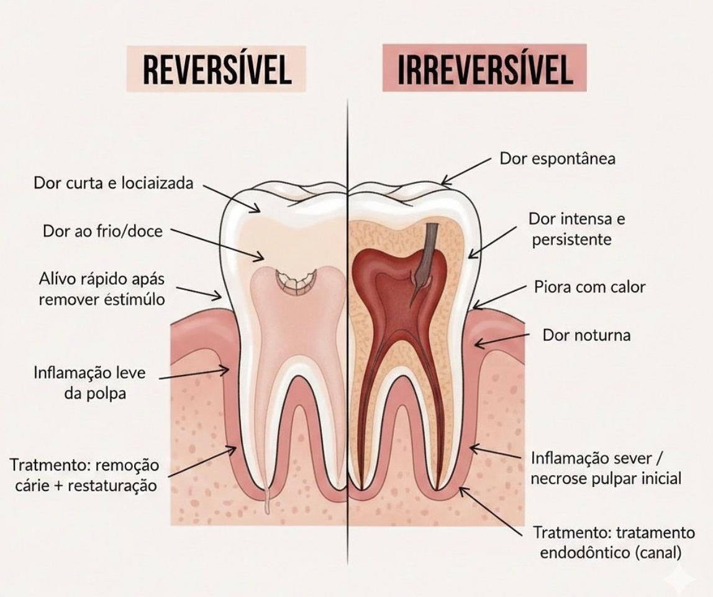
Pulpite reversível × irreversível
- Dor ao estímulo térmico, principalmente ao frio
- Dor que cessa rapidamente após remover o estímulo
- Sem dor espontânea
- Consegue apontar a região, mas nem sempre o dente exato
- 1Anestesia local (se necessário)
- 2Remoção total do tecido cariado
- 3Se próximo da polpa: forramento com hidróxido de cálcio (DYCAL)
- 4Aplicar ionômero de vidro como base
- 5Restauração provisória com ionômero de vidro
Orientar o paciente sobre acompanhamento e evolução do quadro. Se em aproximadamente 45 dias não houver mais sensibilidade, houve regeneração dentinária, e aí sim realiza-se a restauração definitiva.
Se a dor continuar, reavaliar o caso. Provavelmente a pulpite já é irreversível.
- Não faça abertura endodôntica nem irrigação dos canais. Pulpite reversível não tem indicação de limpeza de canal. A conduta é conservadora.
- Não prescreça antibiótico. Não há infecção instalada. Antibiótico sem indicação gera resistência bacteriana e não alivia a dor.
Antes de qualquer abertura, é essencial conhecer a posição do acesso. Errar o acesso significa perder tempo, criar perfurações e não localizar os canais.
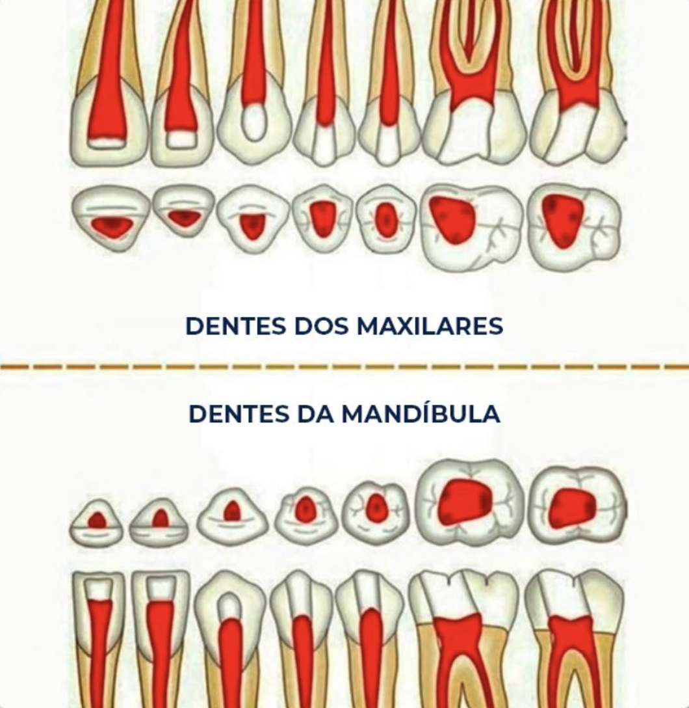
Referência essencial: cada dente tem um número e direção de canais diferente. Consulte sempre antes de iniciar a abertura.
Inflamação pulpar avançada e permanente. A polpa não tem mais capacidade de recuperação. A única solução é remover o tecido pulpar (pulpectomia). Quanto mais cedo agir, melhor para o paciente.
- Dor espontânea, surge sem estímulo
- Intensa, pulsante, contínua
- Piora ao deitar
- Não melhora com analgésico
- Dor prolongada ao frio ou calor
- Paciente muitas vezes já chega desesperado
- 1Anestesia com bloqueio regional ou infiltrativa
- 2Considerar anestesia intrapulpar após abertura (alívio imediato)
- 3Localização e identificação dos canais
- 4Remoção do tecido pulpar com limas endodônticas
- 5Irrigação com hipoclorito de sódio (Solução de Dakin) ou Clorexidina 2%
- 6Limpar o canal até a lima sair totalmente limpa
- 🥇 Melhor opção: Calen PMCC (hidróxido de cálcio + paramonoclorofenol canforado)
- 🥈 Alternativa: Pasta de hidróxido de cálcio puro
- 🥉 Emergência: PMCC puro com bolinhas de algodão + selamento com IRM ou Coltosol
- 🥇 Melhor opção: IRM (óxido de zinco reforçado)
- 🥈 Alternativa: Coltosol
- 🥉 Emergência: Ionômero de vidro convencional
- Não mande embora só com medicação. A dor vai retornar, e pior. A intervenção clínica é indispensável.
- Não prescreça antibiótico. Pulpite é processo inflamatório, não infeccioso. Antibiótico não tem indicação aqui.
A polpa está morta. Não há mais tecido vivo no interior do dente. O processo inflamatório migrou para o periápice, inflamando o ligamento periodontal apical. O dente não responde a testes térmicos.
- Dor à mastigação e à percussão vertical
- Sensação de dente crescido ou alto
- Dente sem resposta ao teste térmico
- Pode ou não ter edema
- Aponta o dente com precisão
Não precisa de anestesia para entrar no canal, a polpa já está necrosada. Anestesie somente se precisar manipular tecidos moles ou gengiva, ou se houver dor residual.
- Abertura coronária com acesso correto ao dente
- Esvaziamento dos canais com limas endodônticas
- Irrigação abundante com hipoclorito de sódio (Solução de Dakin)
- Clorexidina 2% como alternativa
- Evitar soro fisiológico isolado como irrigante
- Alívio oclusal para reduzir a dor à mastigação
- Antibiótico somente se houver sinal sistêmico (febre, edema) ou abscesso em formação
- Deixar aberto por 24 a 48h para drenagem espontânea
Atenção: Nunca manter o dente aberto por longos períodos, risco de reinfecção e piora do quadro.
- 🥇 Calen PMCC (medicação intracanal de escolha)
- 🥈 Hidróxido de cálcio puro
- 🥉 PMCC com algodão em emergência
- Selamento: IRM, Coltosol ou ionômero de vidro
- Não faça apenas alívio oclusal sem abrir o dente. O alívio oclusal é complementar, não a conduta principal.
- Não feche o dente com exsudato ativo. Fechar vai acumular pressão e piorar o quadro.
- Não extraia na fase aguda com infecção instalada. Pode gerar bacteremia e complicações sistêmicas graves. Estabilize primeiro.
Coleção purulenta ao redor do ápice dentário. Resulta de infecção bacteriana de origem pulpar, com predomínio de bactérias anaeróbicas. Pode ser localizado ou evoluir para quadros mais graves.
- Dor intensa, espontânea e pulsante
- Edema com ou sem ponto de flutuação
- Pode ter febre, mal-estar, trismo
- Dente sem resposta ao frio
- Dor à palpação apical
- 1Anestesia local na região do edema
- 2Incisão no ponto de maior flutuação com lâmina de bisturi
- 3Drenagem com pressão suave, esvaziar o máximo possível
- 4Irrigação abundante com soro fisiológico
- 5Instalar dreno (gaze ou fio de sutura) por 3 dias e orientar retorno
- 1Prescrever antibiótico antes de qualquer procedimento invasivo
- 2Abertura coronária e acesso ao canal após estabilização
- 3Irrigação abundante com hipoclorito (Dakin preferível)
- 4Medicação intracanal: Calen PMCC (1ª opção) ou hidróxido de cálcio puro
- 5Selamento provisório: IRM ou Coltosol
Observação: Abscessos são causados principalmente por bactérias anaeróbicas. O Metronidazol amplia o espectro e é excelente alternativa quando não há Amoxicilina + Clavulanato disponível.
- Não use anti-inflamatório em infecção ativa. Suprime a resposta imune e pode mascarar sinais.
- Não mande embora sem drenar. Medicação isolada não resolve abscesso com coleção formada.
- Não extraia com infecção ativa instalada. Estabilize com antibioticoterapia e drenagem antes de qualquer exodontia.
Edema difuso e endurecido, associado a febre ou dificuldade de abertura bucal, pode indicar disseminação da infecção. Encaminhamento imediato.
Inflamação do tecido gengival ao redor da coroa de um dente em erupção, geralmente o terceiro molar inferior. O opérculo sobre o dente cria um espaço onde acumula biofilme, predominantemente bactérias anaeróbicas, gerando processo inflamatório e infeccioso local.
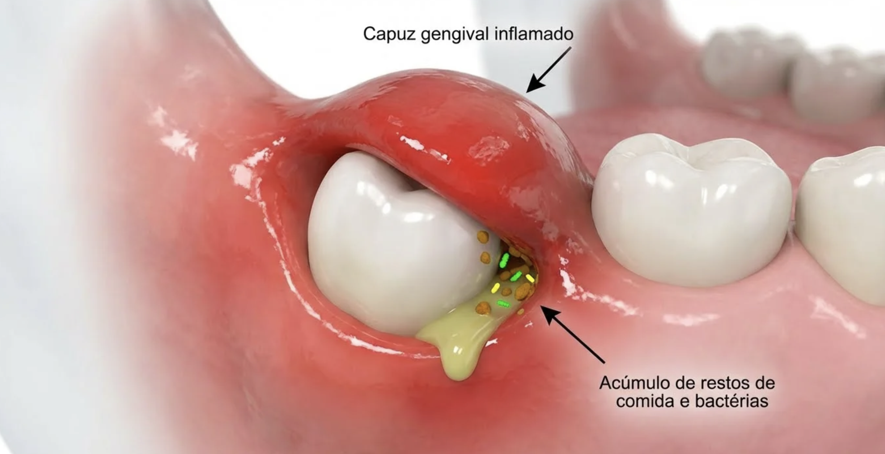
Opérculo inflamado sobre o siso
- Dor na região posterior, terceiro molar inferior em erupção
- Tecido gengival inflamado e dolorido sobre o dente
- Pode ter trismo, halitose, dificuldade de abertura de boca
- Pode haver secreção purulenta sob o opérculo
- Irrigação sob o opérculo com seringa: clorexidina 0,12% de preferência, ou soro fisiológico
- Orientação de higiene rigorosa na região
- Bochecho sem diluir, mantendo na região por 30 a 60 segundos
- Limpeza com cotonete embebido sob o opérculo
- Age contra bactérias anaeróbicas
- Sem infecção instalada: Ibuprofeno 600mg de 8/8h por 3 dias
- Avaliar o siso (posição, espaço, angulação)
- Solicitar radiografia panorâmica
- Considerar exodontia do terceiro molar
- Considerar operculectomia (quando há espaço e o siso tem posição favorável)
Incisão da gengiva inflamada sobre o dente, reduzindo o espaço onde alimentos e biofilme se acumulam.
- Não use anti-inflamatório com infecção ativa. Suprime a resposta imune e pode agravar o quadro.
- Não extraia na fase aguda. A infecção dificulta a anestesia e pode disseminar para espaços mais profundos. Estabilize antes.
Complicação pós-exodontia por perda ou contaminação do coágulo no alvéolo. Sem proteção do coágulo, o osso fica exposto, gerando dor intensa e persistente. Seca: sem coágulo, osso exposto. Úmida/purulenta: secreção no alvéolo.
- Relata que nos primeiros dias após a extração estava bem
- Dor intensa que surge ou piora entre o 3º e 4º dia pós-exodontia (padrão clássico)
- Dor que não cede com analgésico
- Odor fétido
- Seca: alvéolo vazio com osso exposto
- Úmida: secreção purulenta no alvéolo
- Curetagem suave do alvéolo para remover tecido contaminado ou desvitalizado
- Irrigação abundante com soro fisiológico estéril
- Nova sutura do alvéolo após limpeza
- Orientar retorno para remoção da sutura
- Dipirona 500mg 6/6h ou Paracetamol 500mg para controle da dor
- Alveolite úmida: acrescentar Amoxicilina 500mg 8/8h por 7 dias
- Não cureteie de forma agressiva. Pode agravar a lesão óssea e aumentar a dor.
- Não trate apenas com medicação sem intervir no alvéolo. A abordagem local é essencial.
Sangramento persistente ou excessivo após exodontia. Pode ocorrer imediatamente ou horas depois, quando o coágulo se desfaz. Sempre investigue uso de anticoagulantes, AAS ou distúrbios de coagulação.
- Sangramento que não cessa após a extração
- Pode chegar horas depois com sangramento reativado
- Perguntar sempre: usa anticoagulante, AAS ou tem problema de coagulação?
- Compressão local: dobrar a gaze em rolinho firme e morder sobre o local por 20 a 30 minutos
- Se não ceder: curetagem suave do alvéolo + sutura em massa
- Esponja de gelatina absorvível (Gelfoam), colocar diretamente no alvéolo
- Esponja de fibrina, eficaz e reabsorvível
- Cera óssea, para sangramentos de origem óssea
- Se sangrar: fazer bolinha ou rolinho de gaze e morder firme no local por 20 minutos
- Não cuspir com força, desfaz o coágulo e estimula mais sangramento
- Não fazer bochecho nas primeiras 24h pelo mesmo motivo
- Evitar alimentos quentes, duros e bebidas alcoólicas
- Não subestime sangramento em paciente anticoagulado. A coagulação está comprometida e o controle local pode ser insuficiente. Se não conseguir hemostasia, encaminhe.
Perda de estrutura dentária por trauma ou fratura espontânea. A conduta varia completamente de acordo com a extensão da fratura e o envolvimento da polpa.
Sem dor pulpar. A perda é superficial.
- Polimento da borda fraturada para eliminar irregularidades
- Restauração estética se necessário
Dentina exposta causa sensibilidade. A polpa ainda está protegida.
- Proteção da dentina com forramento: DYCAL (hidróxido de cálcio) ou MTA
- Restauração provisória com ionômero de vidro
- Monitorar vitalidade pulpar no retorno
A polpa está exposta ao meio bucal. Risco alto de contaminação e necrose.
- Pulpectomia, remoção do tecido pulpar
- Curativo endodôntico: Calen PMCC ou hidróxido de cálcio
- Restauração provisória: IRM ou Coltosol
- Encaminhar para tratamento endodôntico completo
- Não ignore exposição pulpar. Sem tratamento, a polpa contamina e evolui para necrose.
- Não deixe dentina exposta sem proteção. Além da dor, há risco de contaminação bacteriana progressiva.
- Infecção grave, com evolução rápida e progressiva
- Pode comprometer as vias aéreas em horas
- Origem dentária na maioria dos casos
Celulite aguda e grave dos espaços submandibular, sublingual e submentoniano. Geralmente de origem dentária. A progressão pode causar obstrução das vias aéreas e risco de morte.
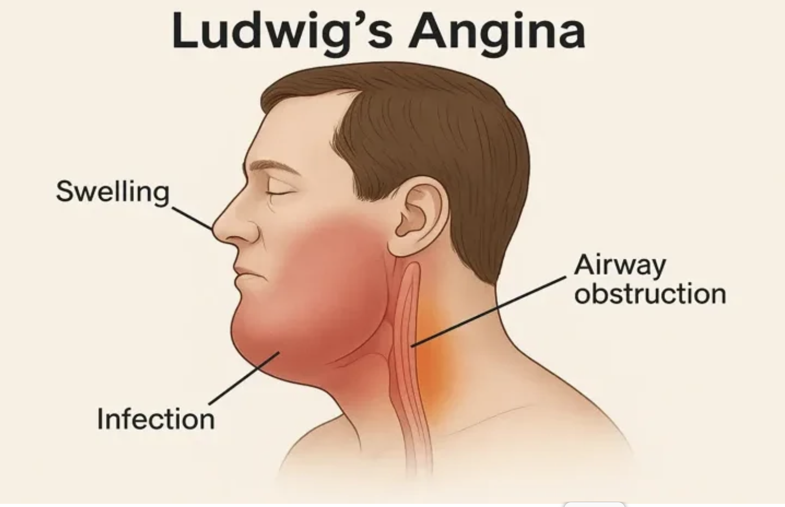
Edema submandibular bilateral característico da Angina de Ludwig
- Edema endurecido bilateral submandibular e sublingual
- Elevação da língua
- Dificuldade para engolir ou respirar
- Febre alta, mal-estar intenso, trismo
- Não tente drenagem ambulatorial. Não há estrutura adequada para esse caso no consultório.
- Não subestime a velocidade de progressão. Angina de Ludwig pode obstruir a via aérea em horas.
Outras Urgências do Dia a Dia
Situações comuns no plantão que você precisa resolver com segurança
Nem toda urgência é um abscesso ou pulpite. Existe um universo de queixas que chegam no plantão e que, se você não souber identificar e resolver, vão te deixar perdido.
Dor breve e aguda em resposta a estímulos térmicos, químicos ou táteis, causada pela exposição da dentina por retração gengival, erosão, abrasão ou lesões cervicais.
- "Meu dente doi quando bebo água gelada"
- "Sinto dor ao escovar nessa região"
- Dor breve que cessa logo após remover o estímulo
- Identificar e eliminar a causa: bruxismo, escovação agressiva, dieta ácida
- Aplicação de flúor verniz (Duraphat), dessensibilizante de ação rápida
- Aplicação de dessensibilizante à base de oxalato de potássio ou glutaraldeído (Gluma, BisBlock)
- Se lesão cervical exposta: restauração com ionômero de vidro
- Recomendar creme dental dessensibilizante de uso contínuo em casa
- Não confunda com pulpite, sensibilidade é dor breve que passa; pulpite irreversível é dor espontânea, contínua, que não cessa. Faça o teste do frio corretamente.
Perda de estrutura dentária na região cervical sem envolvimento de cárie. Cada tipo tem origem distinta, identificar a causa é essencial para evitar recidiva após a restauração.
Causa: Bruxismo / forças oclusais
Aspecto: Lesão em cunha, bordas nítidas
Causa: Escovação agressiva
Aspecto: Lesão em prato, polida
Causa: Ácidos (refluxo, dieta)
Aspecto: Generalizada, fosca
Causa: Contato dente a dente (bruxismo/apertamento)
Aspecto: Desgaste plano, superfícies lisas e regulares
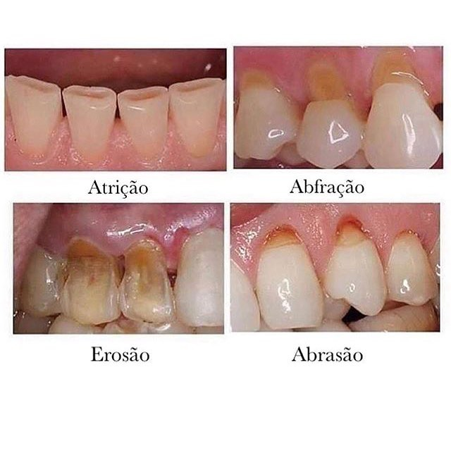
Principais tipos de lesões cervicais não cariosas
- Restauração da lesão cervical com ionômero de vidro, material de escolha
- Se lesão muito profunda: forramento com DYCAL antes da restauração
- Aplicação de flúor verniz para dessensibilização imediata
- Encaminhar para ajuste oclusal ou placa miorrelaxante se bruxismo ou atrição
- Atrição com comprometimento estrutural significativo: restaurar e encaminhar para reabilitação
- Não restaure sem identificar a causa, sem tratar o fator etiológico, a lesão recidiva.
Hábito parafuncional de ranger ou apertar os dentes, geralmente durante o sono, que sobrecarrega a musculatura e a ATM. A DTM pode ter origem articular (esqueletal) ou muscular, e essa diferença muda completamente a conduta.
Pacientes com bruxismo/apertamento apresentam desgaste dental significativo, dores de cabeça matinais, fadiga muscular e hipersensibilidade dentária generalizada, sinais que frequentemente são subestimados na urgência.
Principais sinais de alerta em disfunções temporomandibulares
- Origem: Hiperatividade e fadiga muscular
- Dor: Temporal, masseter, pterigóideo
- Estalido: Geralmente ausente
- Travamento: Incomum
- Origem: Alteração na ATM (disco, côndilo)
- Dor: Pré-auricular, na própria ATM
- Estalido: Presente, indica deslocamento de disco
- Travamento: Pode ocorrer
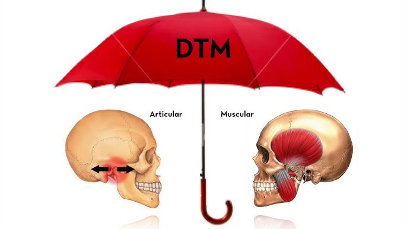
Diferença entre DTM muscular e articular
- "Acordo com dor nos maxilares ou na cabeça"
- "Minha mandíbula estala quando abre, e às vezes trava"
- "Dor muscular na bochecha ou na têmpora"
- "Meu parceiro diz que ranjo os dentes à noite"
- Palpar musculatura: temporal, masseter, pterigóideo medial e lateral
- Palpar ATM pré-auricular: dor localizada = origem articular
- Avaliar abertura de boca: normal = 40 mm a 55 mm
- Verificar estalido e desvio mandibular na abertura
- Observar desgaste oclusal generalizado
- Dipirona 500mg 6/6h ou Paracetamol 500mg 6/6h
- Ibuprofeno 600mg 8/8h por 3 dias, anti-inflamatório complementar
- Calor úmido na região dolorida por 15 minutos, 2–3× ao dia
- Dieta pastosa enquanto houver dor aguda
- Encaminhar para confecção de placa miorrelaxante
- Ciclobenzaprina 5mg, 1 comprimido à noite (causa sonolência)
- Carisoprodol 325mg + Paracetamol + Cafeína (Miosan Plus), opção diurna, menos sonolência
- Clorzoxazona 250mg + Paracetamol (Parafon), outra alternativa
- Não realize procedimentos definitivos em fase aguda, ajustes oclusais e reabilitações durante crise de DTM podem agravar o quadro. Estabilize primeiro.
Fio saliente, braquete solto ou acessório ortodôntico ulcerando a mucosa ou causando dor. Muito comum no plantão.
- Dobrar o fio com alicate de ângulo para afastá-lo da mucosa
- Se não houver instrumento: cortar o fio com alicate cortador
- Aplicar cera ortodôntica sobre a ponta do fio após ajuste
- Tratar a úlcera com gel de triamcinolona (Omcilon-A Orabase) ou anestésico tópico
- Remover se completamente solto e com risco de deglutição
- Cera ortodôntica para proteção temporária se ainda preso ao fio
- Encaminhar ao ortodontista
- Remover ou adaptar o acessório
- Gel de lidocaína 2% para analgesia local
- Cera ortodôntica como proteção imediata
- Não ajuste o aparelho sem autorização do ortodontista, sua função é aliviar o desconforto imediato. O ajuste definitivo é com o especialista.
Próteses mal adaptadas, desgastadas ou com bordas irregulares causam úlceras traumáticas por pressão contínua sobre a mucosa. Muito frequente em pacientes idosos.
- "Minha dentadura está machucando o céu da boca"
- "Tem uma ferida embaixo da prótese"
- "Não consigo usar a dentadura de dor"
- Identificar o ponto de pressão com papel carbono oclusal
- Avaliar bordas afiadas ou pontos de compressão
- Avaliar a úlcera: tamanho, aspecto, tempo de evolução
- Ajuste seletivo com ponta esférica de alta ou baixa rotação na região de pressão
- Polimento da área ajustada
- Orientar: retirar a prótese à noite e higienizá-la
- Tratamento da úlcera com Triamcinolona acetonida (Omcilon-A Orabase) 2–3× ao dia após refeições
- Não ignore úlcera persistente além de 14 dias, biópsia é obrigatória para descartar malignidade.
Coroas, pontes ou próteses que se soltam causam sensibilidade, desconforto estético e risco de aspiração. Antes de recimentar, é obrigatório entender o motivo da descimentação.
- A coroa ainda se encaixa perfeitamente?
- Por que soltou?
- Há cárie no preparo?
- Há sensibilidade intensa?
- Há pino saindo com a coroa?
- Sim: avaliar cimentação. Não: encaminhar ao protético
- Avaliar cada possibilidade
- Tratar a cárie antes de recimentar
- Pode indicar problema pulpar, avaliar antes
- Não recimentar, ver protocolo específico
- Cimento dissolvido (mais comum): limpeza do preparo e interior da coroa → recimentar com cimento correto
- Cárie secundária: não recimentar sem remover toda a lesão → forrar se necessário → recimentar
- Fratura do preparo: cimentação provisória com Temp Bond → orientar avaliação do protético
- Pino metálico ou fibra de vidro saiu com a coroa: limpeza do canal com lima + irrigação + cimentação provisória do pino com DYCAL → encaminhar ao protético/endodontista
| Situação | Cimento | Observação |
|---|---|---|
| Coroa metálica / metalocerâmica | Fosfato de zinco | Resistência mecânica, misturar em placa fria |
| Coroa metálica / metalocerâmica | Ionômero fotoativado (Ketac, Fuji) | Libera flúor, bom se risco de cárie secundária |
| Cerâmica total (e-max, zircônia) | Cimento resinoso dual (RelyX, Panavia) | Requer condicionamento ácido + silano |
| Urgência sem cimento ideal | Cimento temporário (Temp Bond, Provicol) | Não é definitivo, orientar o paciente |
| Pino + coroa soltos | DYCAL (provisório intracanal) | Sela o canal temporariamente |
| Coroa provisória | Temp Bond ou Provicol | NUNCA cimento definitivo |
- Limpar interior da coroa e o preparo com álcool ou clorexidina
- Secar completamente, umidade compromete a cimentação
- Conferir encaixe antes de qualquer coisa
- Misturar o cimento conforme instruções do fabricante
- Aplicar uniformemente no interior da coroa
- Assentar com pressão firme, pedir para o paciente morder em gaze
- Remover excesso após presa inicial com explorador e fio dental
- Conferir oclusão com papel carbono
- Não recimente sem avaliar a causa da descimentação, se soltou por cárie ou pino fraturado e você recimentar sem resolver, a situação vai piorar rapidamente.
- Não use cimento definitivo em coroa provisória, impossibilita a remoção para o tratamento final e pode causar dano ao preparo.
Perda ou fratura de restauração deixa dentina exposta, causando sensibilidade. A conduta de urgência é avaliar a cavidade, remover cárie secundária se houver, e proteger até o tratamento definitivo.
- "A massinha do meu dente caiu"
- "Minha obturação quebrou"
- "O dente está sensível onde tinha restauração"
- Inspecionar a cavidade com sonda e explorador
- Avaliar se há cárie secundária, se houver, remoção completa é obrigatória antes de restaurar
- Após remoção completa da cárie, avaliar profundidade:
- Analgésico se houver dor: Dipirona 500mg ou Ibuprofeno 600mg
- Encaminhar para restauração definitiva na UBS ou consultório
- Não tape cárie ativa sem remover, selar cárie ativa perpetua a destruição dentinária e pode evoluir para envolvimento pulpar sem sinais evidentes.
Procedimento simples que pode virar urgência quando o paciente não retorna no prazo ou quando a sutura está causando inflamação ou infecção local.
| Região / Tipo de Sutura | Prazo para Remoção |
|---|---|
| Mucosa oral geral | 7 dias |
| Extração complexa / alta tensão | 10 dias |
| Pele (facial) | 5 a 7 dias |
| Fio absorvível (Vicryl, Catgut) | Não precisa remover |
- Limpeza com clorexidina 0,12%
- Segurar o nó com pinça dente de rato
- Cortar o fio rente ao tecido com tesoura de Íris curva
- Puxar o nó para remover sem arrastar o segmento externo pela mucosa
- Verificar se todos os pontos foram removidos
- Avaliar cicatrização e orientar higiene
- Não deixe sutura além do prazo, após 15 dias, o fio pode ser incorporado ao tecido, causando reação inflamatória persistente e dificultando a remoção.
Dor ou desconforto após restauração com resina composta. Geralmente transitória, mas pode indicar problema real se não melhorar em 15 dias.
Causa mais comum
Sensibilidade dentinária pós-procedimento
Dor espontânea surgindo
- Analgésico: Ibuprofeno 600mg 8/8h por 3 dias se necessário
- Não ignore dor espontânea, sensibilidade pós-restauração que evolui para dor sem estímulo indica pulpite irreversível.
Coroas provisórias mal adaptadas causam dor gengival, sensibilidade e dificuldade de mastigação. O ajuste é simples e resolve rapidamente.
Em contextos de urgência no SUS, a confecção de coroa provisória geralmente é realizada apenas em dentes anteriores, devido à necessidade estética imediata.
- "Meu provisório está machucando a gengiva"
- "O provisório quebrou"
- Avaliar contorno gengival e pressão sobre tecidos moles
- Ajuste com ponta de carbeto de tungstênio ou lixa de acabamento
- Polir o provisório com taças e pastas
- Se quebrou: confeccionar novo provisório ou solicitar ao protético
- Aplicar flúor verniz se o preparo estiver exposto e sensível
- Não use cimento definitivo no provisório, impossibilita a remoção e compromete o tratamento final.
| Queixa | Conduta imediata | Encaminhamento |
|---|---|---|
| Sensibilidade dentinária | Flúor + dessensibilizante | UBS para restauração |
| Abfração / lesão cervical | Restauração com ionômero | Ajuste oclusal / placa |
| Bruxismo muscular | Analgésico + relaxante muscular | Placa miorrelaxante |
| DTM articular | Analgésico + anti-inflamatório | Avaliação especializada |
| Aparelho machucando | Cera + ajuste do fio | Ortodontista |
| Prótese causando úlcera | Ajuste + Omcilon-A Orabase | Biópsia se > 14 dias |
| Coroa solta (cimento) | Avaliar causa + recimentar | Protético se necessário |
| Coroa com pino solto | Limpeza + DYCAL provisório | Protético + endodontista |
| Restauração perdida | Remover cárie + ionômero | UBS para definitivo |
| Sutura atrasada | Remoção + avaliação | Acompanhamento |
| Sensibilidade pós-restauração | Ajuste oclusal + dessensibilizante | Reavaliar em 15 dias |
| Provisório quebrado | Ajuste ou substituição | Protético |
Traumatismos Dentários
Classificação, conduta imediata e quando encaminhar
Trauma dentário é uma das urgências que mais gera insegurança. O paciente chega em pânico, muitas vezes com sangramento, e você precisa agir rápido e certo.
A boa notícia: a grande maioria dos traumas segue uma lógica clara. Quando você entende a classificação, a conduta vem naturalmente.
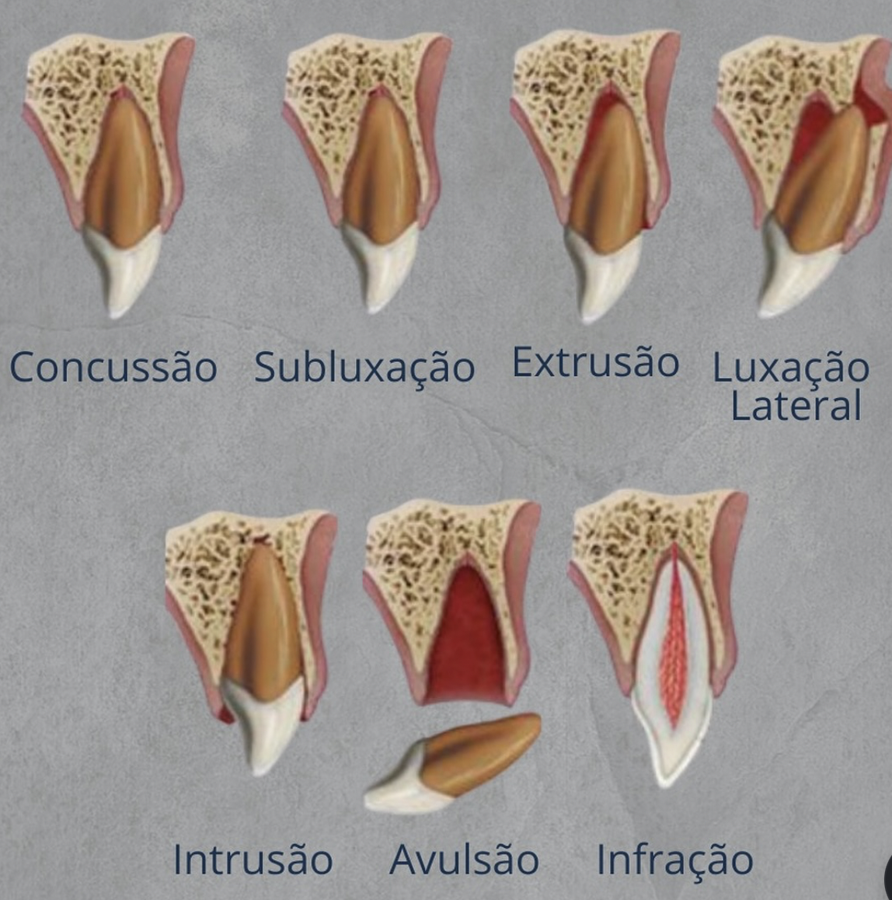
Classificação dos principais tipos de traumatismo dentário
- Se houver suspeita de traumatismo craniano, solicitar avaliação médica antes do atendimento odontológico
- História do trauma: quando, como, onde ocorreu, isso orienta o prognóstico
- Verificar vacina antitetânica em todos os casos com ferida aberta
- Higiene da região traumatizada: gaze umedecida em água oxigenada 10vol ou clorexidina 0,12%, 3× ao dia por 1 semana
- Dieta líquida e pastosa enquanto houver mobilidade ou dor
- Registrar tudo no prontuário e informar o paciente sobre a necessidade de acompanhamento
- Acompanhamento radiográfico por mínimo 1 ano em todos os casos
Trauma leve que afeta os tecidos de suporte do dente sem causar deslocamento ou mobilidade. O dente recebeu um impacto mas permanece no lugar. A polpa pode estar atingida, mas geralmente há recuperação.
- Dente sensível ao toque e à mastigação
- Sem mobilidade
- Sem deslocamento visual
- Pode ter leve sangramento do sulco gengival
- Teste de sensibilidade pode estar alterado inicialmente
- Sem alteração radiológica
- Geralmente não há necessidade de tratamento imediato
- Alívio oclusal se necessário
- Analgésico: Paracetamol 500mg ou Dipirona 500mg
- Radiografia e encaminhamento para acompanhamento endodôntico
- Acompanhamento de vitalidade pulpar
Trauma nos tecidos de suporte com leve mobilidade, mas sem deslocamento do dente. Mais grave que a concussão, mas o dente ainda está na posição correta.
- Dente sensível ao toque
- Leve mobilidade presente
- Sem deslocamento visual
- Sangramento do sulco gengival
- Alívio oclusal
- Analgésico se necessário
- Orientar dieta pastosa por 1 a 2 semanas
- Radiografia para avaliação
- Encaminhar para endodontista para acompanhamento de vitalidade
- Não faça contenção de rotina, contenção só se mobilidade for significativa. Contenção desnecessária pode prejudicar a recuperação periodontal.
Deslocamento do dente em direção vestibular, lingual ou lateral, com fratura da tábua óssea alveolar associada. O dente está deslocado mas ainda está no alvéolo.
- Dente visivelmente deslocado da posição original
- Sensível ao toque
- Pode ter mobilidade
- Sangramento gengival
- Aumento do espaço periodontal + possível fratura óssea associada (radiografia)
- Anestesia local
- Reposicionamento digital cuidadoso até a posição correta
- Contenção semi-rígida por 15 a 20 dias
- Alívio oclusal
- Amoxicilina 500mg 8/8h por 7 dias se houver contaminação
- Verificar vacina antitetânica
- Encaminhar para endodontista
- Acompanhamento radiográfico mínimo 1 ano
- Não deixe o dente deslocado sem reposicionar, quanto mais tempo fora da posição, pior o prognóstico periodontal e pulpar.
Deslocamento parcial do dente para fora do alvéolo. O dente aparece "alongado", parcialmente saído da sua posição. Há ruptura do ligamento periodontal e do feixe neurovascular.
- Dente visivelmente "saindo" do lugar
- Muito sensível ao toque
- Mobilidade aumentada
- Som oco à percussão
- Espaço do ligamento periodontal apical aumentado (radiografia)
- Anestesia local se necessário
- Reposicionamento digital firme e cuidadoso
- Contenção semi-rígida por 2 a 3 semanas
- Alívio oclusal
- Antibiótico se contaminação: Amoxicilina 500mg 8/8h por 7 dias
- Verificar antitetânica
- Encaminhar para endodontista
- Acompanhamento radiográfico por mínimo 1 ano
O dente foi empurrado para dentro do alvéolo pelo impacto. É o trauma de pior prognóstico entre as luxações, há rompimento do suprimento vascular e alto risco de necrose pulpar e reabsorção radicular.
- Dente visualmente mais curto que os adjacentes ou invisível
- Sem mobilidade, dente travado dentro do osso
- Sem sensibilidade ao teste térmico
- Ausência do espaço pericementário apical (radiografia)
- Aguardar reerupção espontânea
- Radiografia e encaminhamento para endodontista
- Controle rigoroso, se não houver reerupção em até 6 semanas, avaliar reposicionamento
- Reposicionamento imediato
- Contenção semi-rígida por até 20 dias
- Encaminhamento urgente para endodontista
- Antibiótico: Amoxicilina 500mg 8/8h por 7 dias
- Verificar antitetânica
- Não force a reerupção sem indicação, em dentes com rizogênese incompleta, esperar é a conduta correta.
Deslocamento total do dente para fora do alvéolo. É a urgência traumática mais crítica. O tempo fora do alvéolo e o meio de armazenamento são os principais fatores de prognóstico.
- Segurar o dente pela coroa, NUNCA tocar na raiz
- Se sujo: lavar rapidamente com soro, nunca esfregar
- Reimplantar imediatamente se possível
- 🥇 Leite integral, melhor meio de conservação
- 🥈 Soro fisiológico
- 🥉 Saliva, dente dentro da própria boca do paciente
- Examinar o alvéolo, remover coágulo com irrigação de soro (não curetear)
- Reimplantar o dente com pressão suave e firme
- Contenção semi-rígida por 7 a 10 dias
- Amoxicilina 500mg 8/8h por 7 dias
- Verificar vacina antitetânica
- Encaminhar para endodontista com urgência
- Remover o ligamento periodontal necrosado raspando a raiz com cureta
- Repetir o protocolo de reimplante acima
- Não deixe o dente secar, dessecamento mata as células do ligamento periodontal e inviabiliza o reimplante.
- Não armazene em água pura, choque osmótico destrói as células do ligamento.
- Não raspe a raiz sem indicação, só raspe após 120 minutos, antes disso o ligamento ainda pode ser viável.
- Não reimplante dente decíduo avulsionado, risco de lesar o germe do dente permanente. Conduta: não reimplantar, acompanhar.
Fratura que envolve apenas o esmalte dentário. Não há exposição de dentina nem da polpa. Prognóstico excelente.
- Polimento da borda fraturada para eliminar irregularidades e bordas cortantes
- Restauração estética com resina composta se necessário
- Radiografia para descartar outros danos
- Acompanhamento de vitalidade pulpar
Fratura que expõe a dentina, mas sem atingir a polpa. A dentina exposta causa sensibilidade e, se não protegida, pode permitir contaminação bacteriana progressiva.
- Proteção imediata da dentina exposta
- Forramento com DYCAL (hidróxido de cálcio) ou MTA
- Restauração provisória com ionômero de vidro
- Se houver fragmento: pode-se colar o próprio fragmento dentário
- Radiografia e acompanhamento de vitalidade
- Restauração definitiva com resina composta após estabilização
Fratura que atinge a polpa dentária, visível pela presença de sangramento puntiforme ou área vermelha na fratura. Risco alto de contaminação e necrose se não tratada imediatamente.
- Atendimento imediato, não deixar para depois
- Pulpectomia, remoção do tecido pulpar
- Limpeza dos canais com limas convencionais
- Irrigação com hipoclorito de sódio
- Medicação intracanal: Calen PMCC ou hidróxido de cálcio
- Restauração provisória: IRM ou Coltosol
- Encaminhar para endodontista
- Ibuprofeno 600mg 8/8h por 3 dias
- Não ignore exposição pulpar, sem tratamento, a polpa contamina em horas e evolui para necrose e abscesso.
Fratura do processo alveolar, o osso que sustenta os dentes. Pode envolver um ou vários dentes em bloco. É um trauma grave que exige avaliação cuidadosa.
- Mobilidade de vários dentes em bloco, ao mover um, os adjacentes se movem junto
- Dor intensa à mastigação
- Possível sangramento gengival abundante
- Reposicionamento do fragmento ósseo por pressão digital
- Contenção rígida ou semi-rígida por 4 a 6 semanas
- Amoxicilina 500mg 8/8h por 7 dias
- Verificar antitetânica
- Encaminhar para cirurgião-dentista ou bucomaxilofacial
- Acompanhamento radiográfico rigoroso
Lesões bucais na urgência
Como identificar, o que fazer e quando a lesão é sinal de alerta
O dentista é o profissional mais capacitado para identificar lesões bucais, porque é o único que examina a cavidade oral com regularidade e técnica. Essa responsabilidade é enorme, especialmente na urgência.
Muitos pacientes chegam ao plantão com queixas aparentemente simples, uma "ferida na boca", uma "manchinha", e o que parece banal pode ser o primeiro sinal de algo grave. Saber diferenciar é o que vai fazer a diferença.
Antes de diagnosticar qualquer lesão, você precisa examinar corretamente. Isso leva menos de 5 minutos e pode salvar uma vida.
- Boa iluminação, use o refletor ou lanterna
- Mucosa labial superior e inferior: afaste o lábio e examine toda a face interna
- Mucosa jugal (bochechas) bilateral: use espelho e afastador
- Gengiva e rebordo alveolar: percorra toda a arcada
- Palato duro e mole: peça para abrir bem e dizer "aaah"
- Língua: examinar dorso, face ventral e, principalmente, bordas laterais
- Soalho bucal: peça para a língua tocar o palato
- Palpação extrabucal: linfonodos cervicais e submandibulares
Lesão ulcerada causada por trauma mecânico: mordida acidental, borda de dente fraturado, prótese mal adaptada, arestas de restauração ou aparelho ortodôntico.
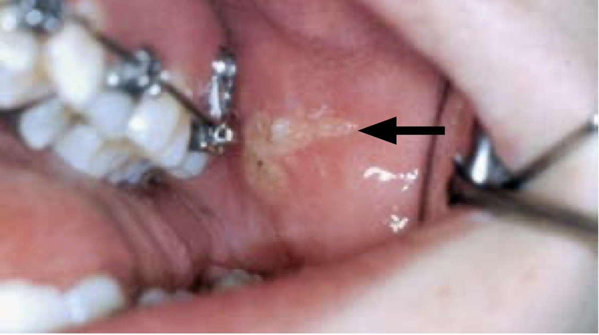
- Dor local proporcional ao tamanho
- Bordas regulares e bem definidas
- Fundo amarelado ou esbranquiçado com halo vermelho
- Causa identificável e próxima à lesão
- Cicatriza em 7 a 14 dias após remoção do fator causal
- Identificar e eliminar o fator causal (ajustar prótese, polir borda, cera ortodôntica)
- Aplicar Omcilon-A Orabase 2 a 3× ao dia após refeições
- Analgésico tópico: gel de lidocaína 2% para alívio imediato
- Orientar evitar alimentos ácidos, condimentados e quentes
- Retorno em 14 dias para avaliar cicatrização
- Não ignore úlcera sem causa identificada, pode ser afta, herpes, líquen plano ou lesão maligna. Toda úlcera sem fator traumático claro precisa de investigação.
Úlceras dolorosas e recorrentes de etiologia multifatorial: estresse, trauma, deficiências nutricionais (B12, ferro, folato), alergias alimentares ou doenças sistêmicas associadas.
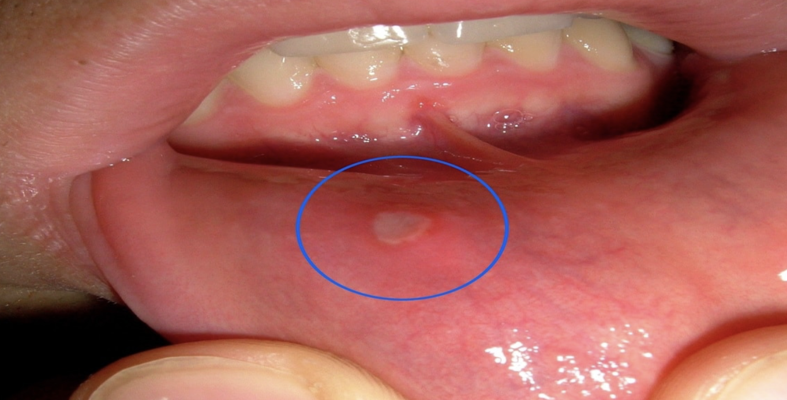
- Úlcera oval ou redonda, dolorosa
- Fundo amarelado com halo vermelho intenso
- Aparece em mucosa não queratinizada: lábio, bochecha, língua, soalho
- NÃO aparece em gengiva inserida ou palato duro, diferencia de herpes
- Cicatriza espontaneamente em 7 a 14 dias
< 1 cm, única ou poucas
> 1 cm, muito dolorosa
Múltiplas, pequenas (1–2 mm)
- Omcilon-A Orabase 2 a 3× ao dia, reduz inflamação e dor
- Gel de lidocaína 2% para analgesia tópica imediata
- Bochechos com clorexidina 0,12%, previne infecção secundária
- Aftas frequentes (> 3×/ano): investigar deficiências nutricionais e doenças sistêmicas
- Analgésico sistêmico se necessário: Paracetamol 500mg
Infecção viral pelo HSV-1. A primoinfecção pode ser intensa (gengivoestomatite herpética), enquanto as recorrências geralmente são localizadas no lábio.
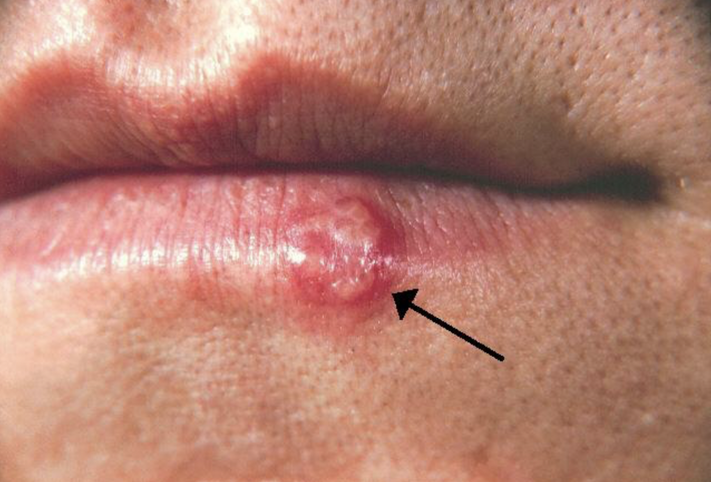
- Pródromo: sensação de queimação, formigamento ou coceira 1 a 2 dias antes
- Vesículas pequenas agrupadas, que rompem e formam úlceras rasas
- Localização típica: vermelhão do lábio, mucosa queratinizada (gengiva, palato)
- Gengivoestomatite herpética: lesões generalizadas + febre + mal-estar, mais comum em crianças
- Duração: 7 a 14 dias
- Fatores desencadeantes: estresse, exposição solar, imunossupressão, febre
- Antiviral tópico: Aciclovir creme 5%, aplicar 5× ao dia por 5 dias no pródromo ou início
- Antiviral sistêmico (formas graves ou imunossuprimidos): Aciclovir 400mg 3× ao dia por 7 a 10 dias
- Analgésico: Paracetamol 500mg
- Hidratação adequada e dieta pastosa nos casos de gengivoestomatite
- Orientar: não tocar as vesículas, risco de autoinoculação
Infecção fúngica pela Candida albicans, oportunista que se desenvolve em condições de imunossupressão, uso prolongado de antibióticos, corticoides, xerostomia ou higiene bucal precária.
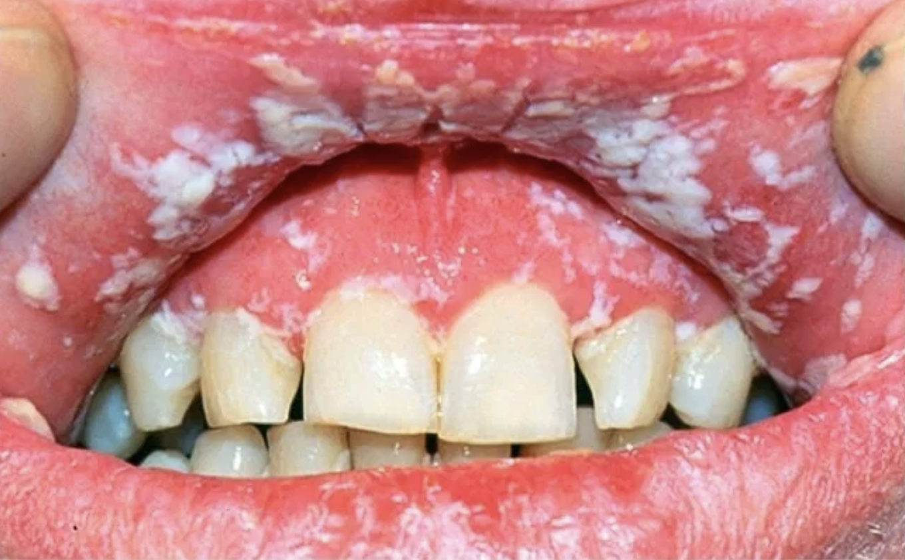
| Tipo | Aspecto clínico | Conduta |
|---|---|---|
| Pseudomembranosa (sapinho) | Placas brancas removíveis, deixam área vermelha | Nistatina 4× ao dia por 14 dias |
| Eritematosa (atrófica) | Áreas vermelhas, língua dolorosa | Nistatina + higiene rigorosa |
| Estomatite protética | Mucosa vermelha sob prótese | Nistatina + higienização da prótese |
| Queilite angular | Fissuras e eritema nos cantos da boca | Nistatina tópica nos comissurais |
- Nistatina suspensão oral 100.000 UI/mL: bochechar e engolir 4× ao dia por 14 dias
- Higiene rigorosa da prótese: molho em hipoclorito 0,5% por 30 min diariamente
- Investigar causa: antibioticoterapia recente, corticoide inalatório, diabetes, HIV
- Formas refratárias ou sistêmicas: Fluconazol 150mg dose única ou 50mg/dia por 7 a 14 dias
- Não ignore candidíase em adulto jovem sem causa aparente, pode indicar imunossupressão: investigar HIV, diabetes ou uso de medicamentos imunossupressores.
Inflamação e ulceração da mucosa oral causada por quimioterapia ou radioterapia. É uma das complicações mais dolorosas do tratamento oncológico e pode comprometer nutrição e qualidade de vida.
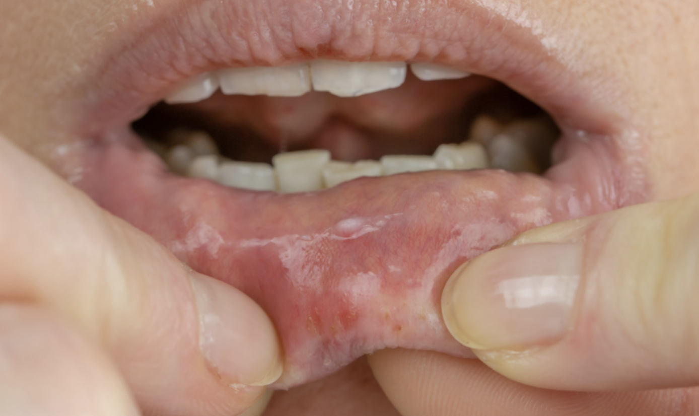
- Em tratamento oncológico ou recém-terminado
- Dor intensa na boca impedindo alimentação
- Úlceras extensas em mucosa oral
- Dificuldade para falar e engolir
- Bochechos com solução de bicarbonato de sódio (1 colher em copo d'água), 3 a 4× ao dia
- Gel de lidocaína 2% para analgesia tópica antes das refeições
- Solução de clorexidina 0,12%, previne infecção oportunista
- Laser de baixa potência, se disponível: acelera cicatrização e reduz dor significativamente
- Analgésico sistêmico: Paracetamol ou Dipirona (evitar AINEs, risco de sangramento em oncológicos)
- Hidratação adequada, dieta líquida e fria
- Encaminhar para equipe oncológica se grau severo
Placa branca na mucosa oral que NÃO pode ser removida por raspagem e não tem outra causa identificável. Taxa de transformação maligna de 1% a 17%.
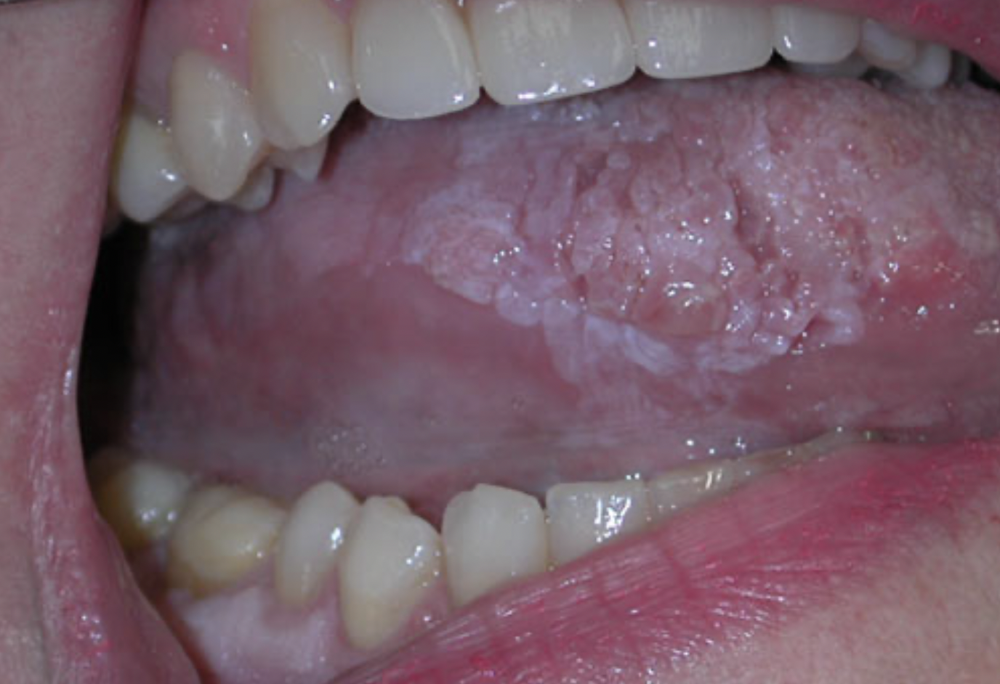
- Placa branca, não se remove à raspagem (diferencia de candidíase)
- Pode ser homogênea (superfície lisa) ou não-homogênea (nodular, verrucosa, maior risco)
- Locais mais comuns: borda lateral de língua, soalho bucal, mucosa jugal
- Geralmente assintomática, paciente não sente nada
- Fortemente associada ao tabagismo
- NUNCA ignorar, toda leucoplasia precisa de acompanhamento
- Eliminar fatores de risco: tabaco, álcool, trauma crônico
- Lesão persistente por mais de 14 dias
- Lesão não-homogênea
- Área eritematosa associada (eritroleucoplasia)
- Paciente tabagista ou etilista
- Encaminhar para estomatologista ou CEO com urgência
Placa vermelha aveludada na mucosa oral sem causa identificável. É a lesão de maior risco de malignidade entre as lesões bucais, mais de 80% apresentam displasia grave ou carcinoma já estabelecido.
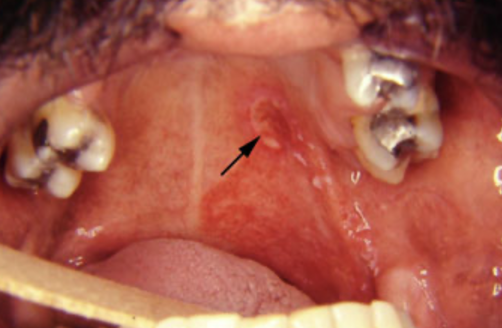
- Área vermelha, aveludada, bem delimitada
- Geralmente assintomática
- Locais de risco: soalho bucal, borda de língua, palato mole
- Pode coexistir com leucoplasia (eritroleucoplasia)
- Biópsia IMEDIATA, não espere 14 dias
- Encaminhar urgente para estomatologista
- Não tratar empiricamente
Lesão no lábio inferior causada pela exposição crônica à radiação ultravioleta. Potencialmente maligna, especialmente em trabalhadores rurais, pescadores e pessoas com exposição solar prolongada.
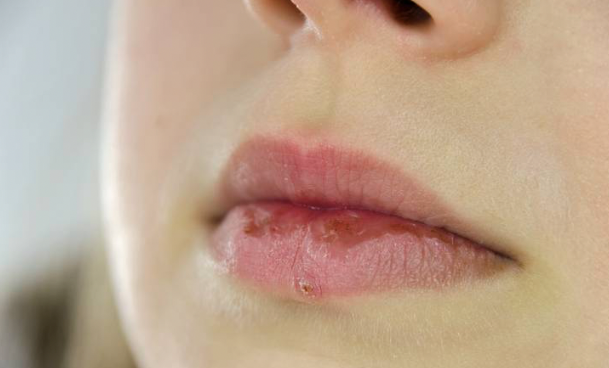
- Lábio inferior ressecado, descamativo
- Perda do limite nítido entre o vermelhão e a pele (limite mucosa-pele apagado)
- Áreas esbranquiçadas ou ulceradas
- Fortemente associada a exposição solar crônica
- Orientar uso de protetor solar labial diário
- Biópsia se houver ulceração, endurecimento ou lesão persistente
- Encaminhar para estomatologista para acompanhamento
O carcinoma espinocelular é o tipo mais comum de câncer bucal, representa 90% dos casos. O Brasil é o terceiro país com maior incidência mundial. O diagnóstico precoce aumenta a taxa de cura de 20% para mais de 80%.
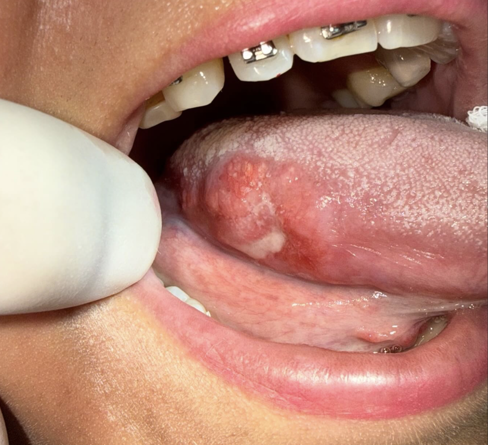
- Tabagismo, principal fator de risco
- Alcoolismo, efeito sinérgico com tabaco (risco 15× maior)
- Exposição solar crônica, lábio inferior
- Infecção por HPV (tipos 16 e 18), especialmente em jovens
- Higiene bucal precária e próteses mal adaptadas
- Úlcera que não cicatriza em 14 dias, mesmo sem fator irritante
- Placa branca (leucoplasia) ou vermelha (eritroplasia) que não some
- Nódulo ou endurecimento na mucosa ou língua
- Sangramento espontâneo sem causa aparente
- Dificuldade para mastigar, engolir ou mover a língua
- Linfonodos aumentados no pescoço sem causa infecciosa
- Lesão assintomática, atenção: câncer inicial frequentemente NÃO dói
- Borda lateral de língua, mais comum
- Soalho bucal
- Lábio inferior
- Palato mole e orofaringe
- Mucosa jugal
- Documentar a lesão: localização, tamanho, aspecto, tempo de evolução
- Fotografar se possível
- Perguntar sobre fatores de risco: tabaco, álcool, exposição solar
- Se suspeita de malignidade: encaminhar com urgência para CEO ou estomatologista
- NÃO tratar empiricamente lesão suspeita
- NÃO esperar mais de 14 dias para encaminhar
Lesão vascular benigna, exofítica, de coloração avermelhada ou arroxeada que sangra facilmente. Muito comum na gengiva. Em gestantes recebe o nome de "tumor de gravidez" pela influência hormonal.
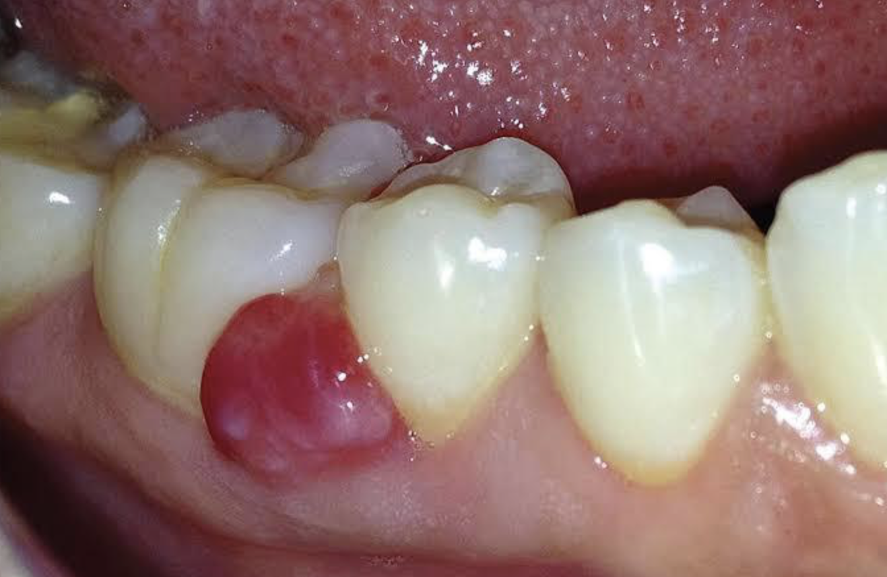
- Lesão elevada, vermelha ou arroxeada, mole
- Sangra facilmente ao menor toque
- Cresce rapidamente
- Localização frequente: gengiva, lábio, língua
- Mais comum em gestantes e adolescentes
- Controle do fator irritante (cálculo, restauração com excesso, corpo estranho)
- Excisão cirúrgica após resolução do fator causal
- Em gestantes: manter controle e remover após o parto se não regredir
- Encaminhar para cirurgião para excisão
| Lesão | Aspecto | Localização | Remove à raspagem? | Conduta |
|---|---|---|---|---|
| Úlcera traumática | Oval, fundo amarelado | Próxima à causa | — | Eliminar causa + Omcilon |
| Afta | Oval, halo vermelho intenso | Mucosa não queratinizada | — | Omcilon + analgésico tópico |
| Herpes | Vesículas agrupadas | Lábio, gengiva, palato | — | Aciclovir tópico/sistêmico |
| Candidíase | Placa branca | Qualquer mucosa | SIM, remove | Nistatina 14 dias |
| Leucoplasia | Placa branca | Língua, soalho, bochecha | NÃO remove | Biópsia se > 14 dias |
| Eritroplasia | Placa vermelha aveludada | Soalho, língua | — | Biópsia IMEDIATA |
| Câncer bucal | Úlcera indurada, persistente | Língua, soalho, lábio | — | Encaminhar urgente |
| Granuloma piogênico | Nódulo vermelho sangrante | Gengiva | — | Excisão cirúrgica |
Urgências Relacionadas aos Sisos
Posicionamento, impacto, dor e como resolver na prática
Dor no siso é uma das queixas mais frequentes na UPA e no consultório. Mas quando o paciente chega dizendo que está com "dor no dente do fundo", a causa pode ser bem mais complexa do que parece.
O terceiro molar é o último dente a erupcionar, geralmente entre 17 e 25 anos. Na maioria das pessoas, já não há espaço suficiente na arcada. O resultado: o dente fica preso, torto, pressionando estruturas vizinhas.
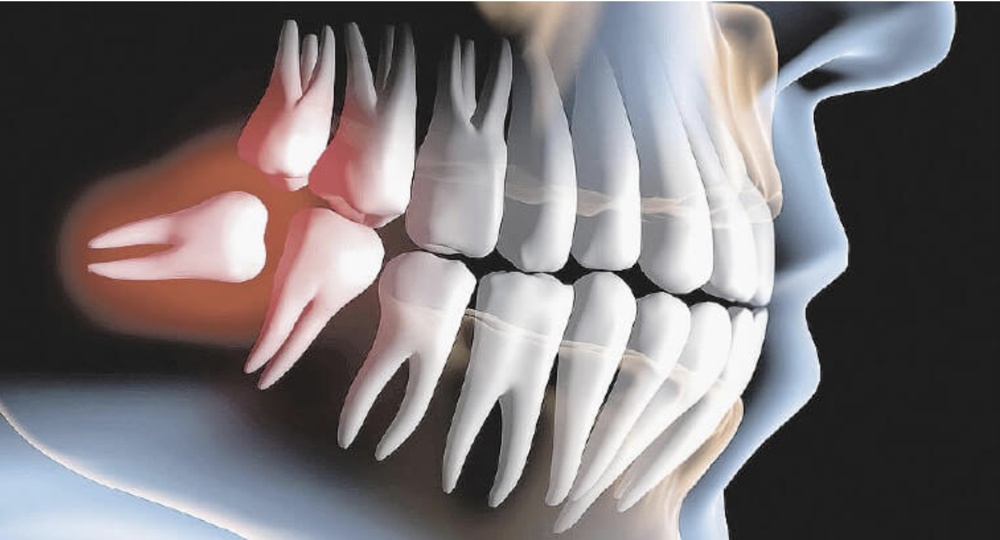
- Semi-incluso: erupciona parcialmente, cria o opérculo e favorece pericoronarite
- Incluso intraósseo: completamente coberto por osso, pode pressionar nervos e dentes vizinhos
- Submucoso: passou do osso mas ainda coberto por gengiva
- Impactado: bloqueado por outro dente, osso ou tecido mole
Antes de qualquer intervenção, você precisa saber como o dente está posicionado. Duas classificações são clássicas na literatura e fundamentais na prática.
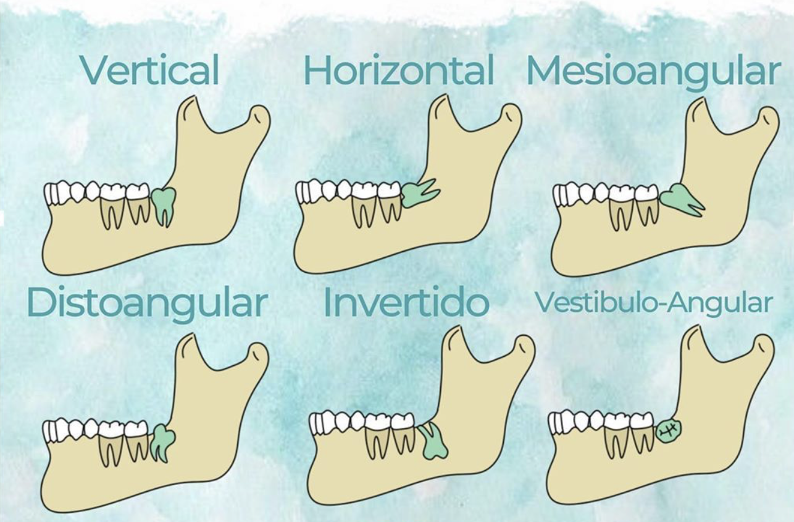
| Posição | O que significa | Impacto clínico |
|---|---|---|
| Vertical | Eixo paralelo ao 2º molar | Pericoronarite frequente, opérculo cobre a oclusal |
| Mesioangular | Inclinado para frente (mésio) | Mais comum em jovens; pressiona o 2º molar |
| Distoangular | Inclinado para trás (distal) | Dificulta a extração; risco de dano ao 2º molar |
| Horizontal | Deitado em 90° | Alta complexidade; reabsorção do 2º molar |
| Invertido | De cabeça para baixo | Raro; associado a cistos e tumores |
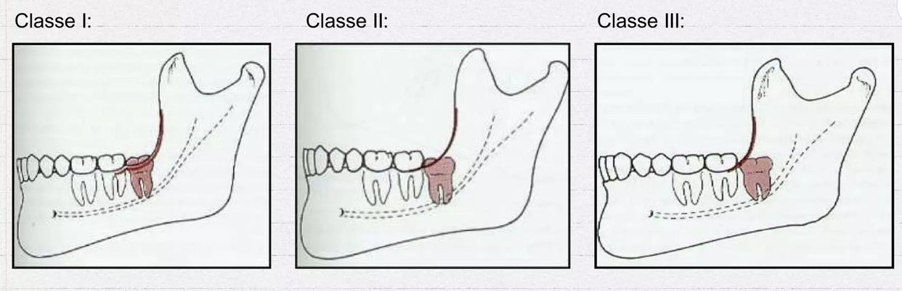
| Classe | O que significa | Acesso | Complexidade |
|---|---|---|---|
| I | Espaço suficiente, siso tem via de saída | Fácil, boa visibilidade | Baixa |
| II | Metade ou mais coberta pelo ramo mandibular | Pode exigir osteotomia | Média |
| III | Totalmente dentro do ramo, sem espaço | Muito limitado, alta morbidade | Alta |
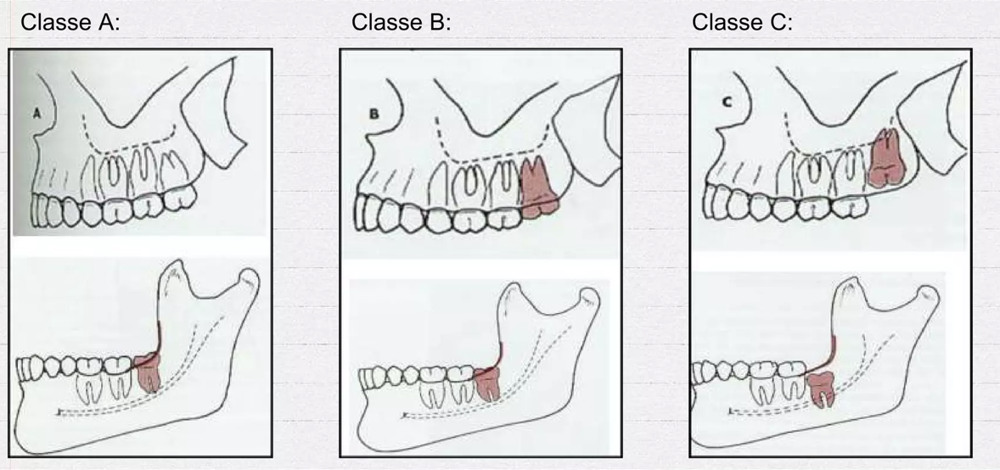
| Posição | O que significa | Complexidade |
|---|---|---|
| A | Oclusal do siso no mesmo nível ou acima da oclusal do 2º molar | Baixa |
| B | Oclusal entre a cervical e oclusal do 2º molar | Média |
| C | Oclusal abaixo da linha cervical, totalmente no osso | Alta |
Use sempre as duas classificações juntas. Uma define onde está o dente, a outra define quão fundo está. Juntas, elas determinam a complexidade da cirurgia e quem deve realizá-la.
- Avalie a posição angular (Winter): o dente está vertical, mesioangular, distoangular ou horizontal? Quanto mais inclinado, mais difícil o acesso e maior o risco para o segundo molar.
- Avalie a profundidade e o espaço (Pell & Gregory): o dente tem espaço para sair (Classe I, II ou III)? Está na superfície ou profundo no osso (A, B ou C)?
- Combine as duas: cruze os achados para determinar complexidade, escolha do profissional e conduta na urgência.
| Combinação | Complexidade | Quem pode fazer | Conduta na urgência |
|---|---|---|---|
| Classe I-A | Baixa | Clínico com experiência | Pode extrair se sem infecção ativa |
| I-B / II-A | Média | Clínico experiente | Avaliar com panorâmica |
| II-B / III-A | Alta | Especialista em cirurgia | Encaminhar após estabilizar |
| III-B / III-C | Muito alta | Cirurgião bucomaxilofacial | Encaminhar à atenção secundária |
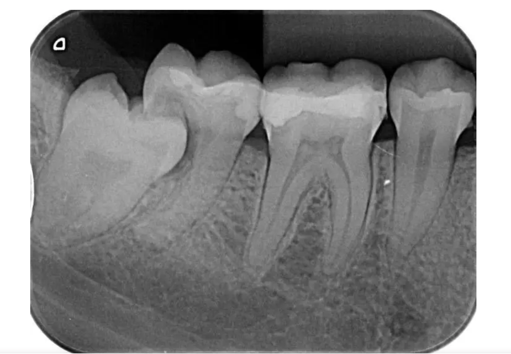
| Condição | Como acontece | Sinal clínico |
|---|---|---|
| Pericoronarite | Opérculo acumula biofilme anaeróbio | Dor, edema, trismo, halitose |
| Cárie no 2º molar | Nicho de acúmulo na distal do 7 | Cárie cervical distal no segundo molar |
| Reabsorção radicular do 7 | Siso horizontal pressiona a raiz | Detectado no RX, frequentemente assintomático |
| Dor referida | Pressão no nervo alveolar inferior ou ATM | Dor no ouvido, cabeça, região temporal |
| Cisto dentigígero | Líquido acumula ao redor da coroa inclusa | Expansão óssea, detectado no RX |
| Doença periodontal | Higienização impossível na distal do 7 | Bolsas periodontais, sangramento |
| Má oclusão | Pressão do siso desloca dentes anteriores | Apinhamento progressivo |
Inflamação e infecção do tecido gengival ao redor da coroa do siso parcialmente erupcionado. O opérculo é o principal acumulador de bactérias anaeróbicas.
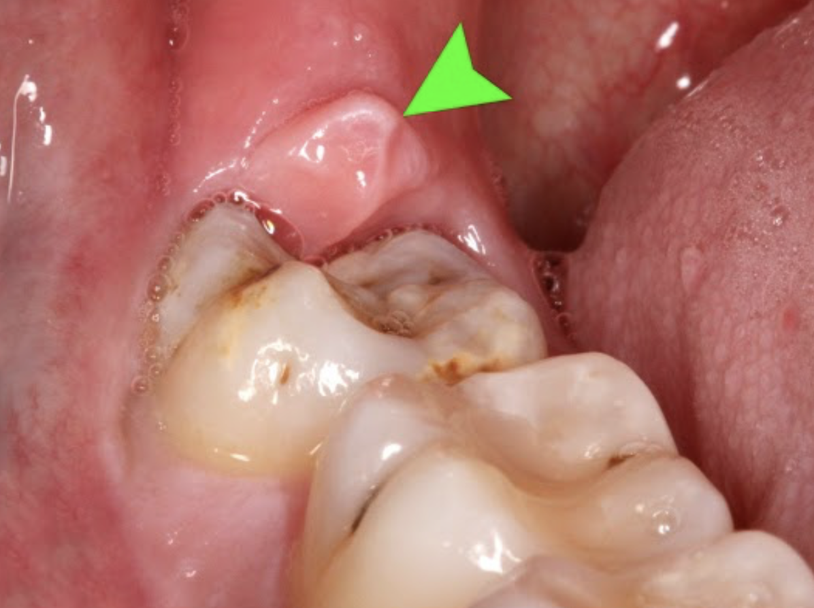
- Irrigação sob o opérculo com seringa, clorexidina 0,2% ou água oxigenada (10 volumes)
- Bochecho com água oxigenada diluída, ação anaeróbicida
- Ibuprofeno 600mg 8/8h por 3 dias
- Orientação de higiene rigorosa
- Mesmas medidas locais acima
- 1ª opção: Amoxicilina + Clavulanato 875/125mg 12/12h por 7 dias
- 2ª opção: Amoxicilina 500mg + Metronidazol 400mg 8/8h por 7 dias
- Alérgico a penicilina: Clindamicina 300mg 6/6h por 7 dias
- Dipirona 500mg 6/6h para dor
- Não extraia na fase aguda, infecção ativa dificulta a anestesia, aumenta risco de bacteremia e pode disseminar a infecção. Estabilize primeiro, extraia depois.
- Não use anti-inflamatório com infecção instalada, suprime resposta imune e piora o quadro.
Pericoronarite não tratada pode evoluir para abscesso localizado ou, em casos graves, para celulite facial e Angina de Ludwig. Reconhecer essa progressão é fundamental.
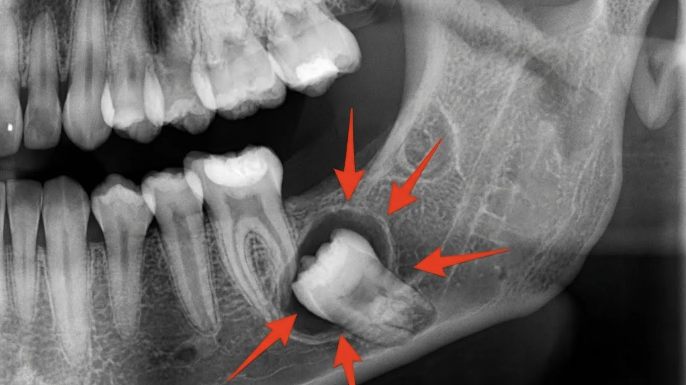
- Avaliar: há ponto de flutuação? Trismo? Febre? Disfagia?
- Com ponto de flutuação: drenar + antibiótico
- Com trismo + febre + disfagia: encaminhar para hospital
- Edema endurecido + trismo + febre + disfagia = risco de extensão para espaços profundos
- Não subestime. Encaminhe imediatamente.
O siso impactado pode causar dor que o paciente sente em outro lugar. Isso acontece porque o nervo alveolar inferior, que passa próximo às raízes do siso inferior, se comunica com ramos do trigêmeo que inervam ouvido, têmpora e dentes adjacentes. O paciente sente a dor em um ponto, mas a origem está em outro. Muitas vezes, o próprio paciente chega convicto de que tem "pulpite no dente ao lado" ou "dor no ouvido" sem qualquer causa aparente nesses locais. O clínico que não examina a região do siso vai tratar o sinal, não a causa.
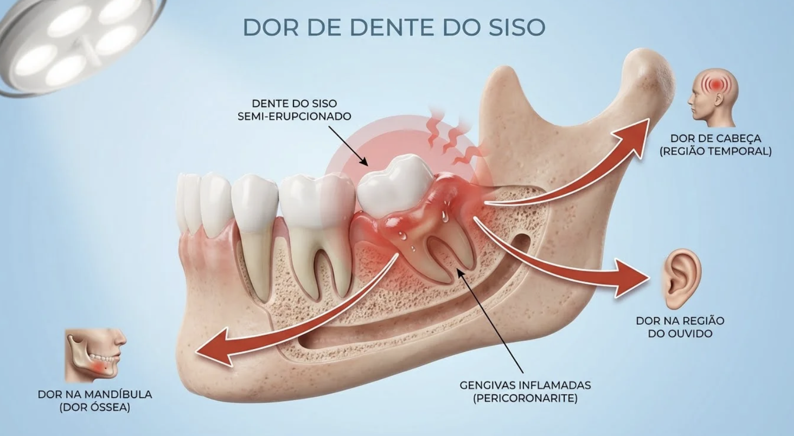
- Dor no ouvido, siso inferior próximo da ATM e do conduto auditivo
- Dor de cabeça ou região temporal, pressão sobre o músculo temporal
- Dor no dente ao lado, confundida com pulpite do segundo molar
- Dor facial difusa, pressão no nervo alveolar inferior
O siso mal posicionado cria um espaço de acúmulo na superfície distal do segundo molar. Quadro frequente que passa despercebido até o paciente sentir dor.
- Dor na região posterior, confunde com dor no próprio siso
- Ao examinar: a cárie está no segundo molar, não no siso
- Conduta imediata: protocolo de pulpite (reversível ou irreversível, conforme avaliação)
- Conduta definitiva: tratamento da cárie + avaliação de exodontia do siso
- Não trate só o siso ignorando o segundo molar, a causa da dor pode estar no dente vizinho. Examine toda a região.
Limitação de abertura de boca causada por espasmo muscular em resposta à infecção ou inflamação. Sinal de que o processo está evoluindo além da região do opérculo.
40–55 mm
30–40 mm
20–30 mm
< 20 mm + febre
Nem todo siso precisa ser extraído. Mas quando as indicações estão presentes, a exodontia é o tratamento definitivo e insubstituível.
- Pericoronarite recorrente, principal indicação
- Abscesso de repetição
- Cárie no próprio siso sem restauração possível
- Cárie cervical distal no 2º molar causada pelo siso
- Reabsorção radicular do 2º molar
- Cisto dentigígero ou tumor associado
- Indicação ortodôntica
- Dor facial crônica atribuída ao siso
- Infecção ativa, estabilize primeiro
- Sem radiografia prévia adequada
- Paciente com compromisso sistêmico não controlado
- Cirurgia de alta complexidade, encaminhe
Na urgência, você não vai fazer cirurgia de siso complexo. Mas se o caso for simples e você tiver condições, o planejamento mínimo é inegociável.
Antes de qualquer procedimento, converse com o paciente sobre o que será feito, o que esperar no pós-operatório e quais são os riscos envolvidos. Alinhar expectativas evita insatisfação e reclamações. No consultório particular, é fundamental ter termo de consentimento assinado. Na UPA, essa abordagem costuma ser mais limitada pela dinâmica do serviço.
- Radiografia panorâmica, posição, profundidade, relação com nervo alveolar inferior
- Classificação do caso: Winter + Pell & Gregory
- Avaliar: raiz dilacerada? Cisto associado? Próximo ao nervo?
- Anamnese: alergias, medicações, histórico de coagulação
- Consentimento informado: explicar riscos
- Parestesia transitória ou permanente do nervo alveolar inferior (0,4%–8,4%)
- Edema, dor e trismo pós-operatórios, afetam 43%, 49% e 17% dos pacientes
- Alveolite seca, mais frequente em mulheres e tabagistas
- Fratura radicular, mais comum em dentes anquilosados ou raízes dilaceradas
- Lesão ao dente vizinho
- Ibuprofeno 600mg 8/8h por 3 dias, anti-inflamatório e analgésico
- Dipirona 500mg 6/6h em caso de dor
- Amoxicilina 500mg 8/8h por 7 dias, se indicação de profilaxia
- Clorexidina líquida 0,12% para bochechos. Uso indicado geralmente após 3 dias da cirurgia.
- Gelo nas primeiras 24h (20 min ligado / 20 min desligado)
- Morder gaze por 30 minutos após a cirurgia
- Não cuspir, não fazer bochecho e não usar canudinho nas primeiras 24h
- Dieta líquida e fria nas primeiras 24h, pastosa até o retorno
- Não fumar, risco de alveolite aumenta significativamente
- Retorno em 7 a 10 dias para remoção de sutura
A parestesia é uma alteração de sensibilidade causada por lesão do nervo alveolar inferior, podendo gerar dormência, formigamento ou perda de sensibilidade no lábio inferior, queixo e dentes inferiores.
- Relação anatômica íntima entre as raízes do terceiro molar e o canal mandibular
- Compressão por edema ou hematoma no pós-operatório imediato
- Trauma direto durante a exodontia, corte ou esmagamento do nervo
- Estiramento ou lesão mecânica por movimentação excessiva da raiz
- Dormência no lábio inferior, queixo ou dentes do lado operado
- Formigamento persistente na região afetada
- Sensibilidade alterada ao toque ou à temperatura
- Sensação de choque ou "agulhada" sem estímulo evidente
- Não avaliar a proximidade das raízes com o canal mandibular antes da cirurgia
- Não solicitar exame adequado, panorâmica obrigatória e tomografia quando indicada
- Força excessiva durante a exodontia, especialmente em raízes dilaceradas ou próximas ao nervo
- Planejamento cirúrgico insuficiente ou ausente
- Parestesia persistente além de 30 dias sem melhora progressiva
- Perda total de sensibilidade na região inervada
- Piora progressiva ou surgimento de dor neuropática
| Situação | Conduta imediata | Encaminhamento |
|---|---|---|
| Pericoronarite leve | Irrigação + Ibuprofeno | Avaliação eletiva |
| Pericoronarite com infecção | Irrigação + Amox + Clavulanato | Exodontia após resolução |
| Abscesso com flutuação | Drenar + antibiótico | Cirurgião se necessário |
| Trismo + febre + disfagia | — | Hospital / SAMU imediato |
| Dor referida pelo siso | Analgésico + identificar causa real | Avaliação radiográfica |
| Cárie no 2º molar | Tratar cárie conforme protocolo | Avaliar exodontia do siso |
| Siso simples sem infecção ativa | Exodontia se indicado e possível | Cirurgião se complexo |
| Parestesia pós-operatória | Complexo B + acompanhamento | Especialista se >30 dias |
Pós-operatório
As orientações de pós-operatório são parte do tratamento, não um protocolo burocrático. Paciente bem orientado não retorna com complicação evitável.
Primeiras 24 horas
- Não remover o coágulo, não cuspir com força
- Compressas de gelo por 20 min a cada hora nas primeiras 6h
- Dieta líquida/pastosa e fria
- Evitar atividade física intensa
Higiene e cuidados gerais
- Bochecho suave com soro fisiológico a partir do 2º dia
- Escovação normal, evitar a região operada no 1º dia
- Não fumar nas primeiras 48h (risco de alveolite)
Sinais de alerta, retornar imediatamente
- Febre acima de 38°C
- Trismo progressivo (dificuldade de abrir a boca)
- Edema que cresce após 48h
- Sangramento que não cessa com compressão
Perguntas frequentes
Posso prescrever antibiótico sem drenar o abscesso?
Não. O antibiótico não penetra adequadamente em tecido necrótico. A drenagem é obrigatória quando há flutuação. O antibiótico é adjuvante, não substituto do procedimento.
Quando encaminhar para o pronto-socorro?
Edema com comprometimento de espaços anatômicos profundos (sublingual, submandibular), trismo intenso, disfagia, dificuldade respiratória ou febre alta com estado geral comprometido.
Devo extrair o dente na urgência?
Somente se o dente for a causa do processo e não houver possibilidade de tratamento conservador. Na maioria dos casos, trate a urgência e agende o definitivo.
Como controlar a dor pós-procedimento?
Ibuprofeno 400–600mg a cada 8h por 3 dias é o protocolo de escolha. Para dor irruptiva, associar dipirona 500mg como resgate. Opioides raramente são necessários em urgências odontológicas ambulatoriais.
Urgências Odontológicas em Odontopediatria
Como atender crianças com segurança, controle emocional e conduta correta
Atender criança na urgência não é só tratar dente. É controlar dor, comportamento e ansiedade, tudo ao mesmo tempo.
Na maioria das vezes, o paciente não colabora, o responsável está ansioso e você precisa resolver rápido, com segurança e sem trauma emocional.
Na odontopediatria, técnica resolve o dente. Mas é o manejo que permite o tratamento acontecer.
Dor de dente em criança
O que geralmente está por trás
- Cárie profunda
- Pulpite
- Necrose pulpar
Como a criança chega
- Chorando ou irritada
- Dificuldade de localizar a dor
- Recusa alimentar
- Pode ter febre associada
Conduta na urgência
- Anamnese com o responsável (a criança raramente descreve bem)
- Exame clínico rápido e objetivo, minimize o tempo de espera
- Analgésico conforme peso: Dipirona 15 mg/kg ou Paracetamol 10–15 mg/kg
- Intervenção conforme diagnóstico: pulpite → abertura coronária; necrose → drenagem se necessário
Criança não explica dor. Você precisa interpretar sinais.
Abscesso dentário em criança
Como chega
- Edema facial
- Dor intensa
- Pode ter febre
- Prostração e irritabilidade
Conduta
- Drenagem se houver ponto de flutuação
- Amoxicilina em dose pediátrica (50 mg/kg/dia ÷ 3×)
- Clindamicina se alérgico à penicilina
- Analgésico conforme peso
- Encaminhar para tratamento definitivo
- Edema difuso + febre → atenção redobrada, risco de celulite
- Dificuldade respiratória ou disfagia → encaminhamento imediato para PS
Trauma em dente decíduo
A conduta no dente decíduo é diferente do adulto, não aplicar os mesmos protocolos.
Conduta principal
- NÃO reimplantar dente decíduo avulsionado, risco ao germe do permanente
- Avaliar risco ao dente permanente subjacente
- Controle clínico e radiográfico obrigatório
- Orientar responsáveis sobre acompanhamento
No dente decíduo, preservar o permanente é a prioridade máxima.
Avulsão em dente permanente jovem
Meios de conservação (em ordem de preferência)
- Leite integral, melhor opção disponível
- Soro fisiológico
- Saliva do próprio paciente
- Água (último recurso, evitar)
Conduta
- Reimplante imediato quando possível
- Irrigar com soro, não esfregar a raiz
- Contenção flexível por 2 semanas
- Encaminhamento endodôntico urgente
- Profilaxia antitetânica se necessário
Cárie extensa em criança
Como a criança chega
- Dor intermitente ou constante
- Cavidade visível ao exame
- Sensibilidade a alimentos e temperatura
- Pode recusar alimentação
Conduta na urgência
- Avaliar possibilidade de restauração imediata
- Se inviável: selamento provisório com cimento de óxido de zinco
- Remoção parcial de tecido cariado se necessário
- Analgésico se dor intensa
- Agendar tratamento definitivo
Pulpite em criança
Sinais e sintomas
- Dor espontânea
- Dor noturna (acorda a criança)
- Irritabilidade aumentada
- Sensibilidade à mastigação
Conduta
- Abertura coronária para alívio da pressão
- Medicação intracâmara (PMCC ou hidróxido de cálcio)
- Selamento provisório
- Analgésico conforme peso
- Encaminhar para pulpotomia ou pulpectomia definitiva
Pulpite reversível × irreversível
| Critério | Reversível | Irreversível |
|---|---|---|
| Dor espontânea | Ausente | Presente |
| Dor noturna | Ausente | Frequente |
| Resposta ao frio | Cede rapidamente | Persiste >30s |
| Conduta | Proteção pulpar + restauração | Pulpotomia ou pulpectomia |
Lesões bucais em crianças
- Úlcera oval dolorosa
- Base amarelada, halo avermelhado
- Controle da dor + higiene
- Resolução espontânea em 7–14 dias
- Vesículas múltiplas na gengiva
- Febre alta, dor intensa
- Analgésico + hidratação
- Aciclovir se <72h do início
- Placas brancas removíveis
- Comum em lactentes
- Nistatina suspensão oral
- Investigar imunossupressão
Conduta geral nas lesões bucais infantis
- Controle da dor, prioridade no atendimento
- Orientar higiene cuidadosa mesmo com lesões ativas
- Medicação tópica quando indicada (anestésico local, antifúngico, antiviral)
- Orientar responsáveis sobre evolução esperada e sinais de alerta
Manejo comportamental na urgência
Esse é o verdadeiro diferencial. Dominar a técnica sem dominar o manejo resulta em atendimentos incompletos, traumas emocionais e rejeição futura ao dentista.
Condutas práticas
- Falar com calma, voz baixa e segurança
- Explicar em linguagem simples e amigável ("vou colocar um pouquinho de soninho no dente")
- Evitar termos assustadores: agulha, dor, corte, arrancar
- Manter postura tranquila mesmo sob pressão
- Contenção física apenas se necessário e com consentimento dos responsáveis
Sequência estratégica
Sem manejo, não existe tratamento em criança.
Erros comuns na urgência pediátrica
- Forçar atendimento sem controle emocional, gera trauma e aumenta a resistência
- Subestimar a dor da criança, ela sente tanto quanto o adulto, às vezes mais
- Usar linguagem inadequada, "vai doer só um pouquinho" ativa o medo antes do procedimento
- Não orientar o responsável corretamente, gera cobranças, retornos desnecessários e quebra de confiança
- Reimplantar dente decíduo avulsionado, erro grave com consequências permanentes
Laserterapia na Odontologia Clínica
Fundamentos, indicações e aplicação prática na urgência e no cotidiano clínico
A laserterapia é uma ferramenta cada vez mais presente na odontologia moderna, com capacidade de potencializar resultados clínicos, reduzir dor e acelerar processos de reparo tecidual. Pode ser usada tanto no SUS quanto no consultório particular. Após a aquisição do equipamento, o custo operacional é baixo e o impacto na experiência do paciente é alto. Não é um recurso exclusivo de clínicas de alto padrão: é uma ferramenta clínica real, com indicações bem definidas e resultados consistentes.
A laserterapia não substitui a conduta clínica, mas potencializa os resultados quando bem indicada.
O que é laserterapia
A laserterapia de baixa potência, conhecida como LLLT (Low-Level Laser Therapy), utiliza luz de comprimento de onda específico para promover efeitos biológicos nos tecidos sem gerar calor significativo. É não invasiva, indolor e bem tolerada pelos pacientes, incluindo crianças e idosos.
Diferente dos lasers cirúrgicos de alta potência, o laser de baixa potência não corta nem cauteriza. Sua ação é bioestimuladora: atua no metabolismo celular, modula a resposta inflamatória e acelera os processos de reparo.
Efeitos biológicos
Principais indicações na urgência
A laserterapia tem indicações bem definidas na urgência odontológica. Não é indicada para todos os casos, mas quando bem selecionada, complementa a conduta principal com benefícios reais e rápidos.
Como o laser ajuda na prática clínica
A laserterapia não resolve o diagnóstico, mas age de forma complementar, melhorando a evolução clínica em múltiplas frentes ao mesmo tempo.
Em muitos casos, o paciente relata melhora já na primeira sessão.
Laserterapia na parestesia
A parestesia pós-cirúrgica é uma das complicações mais angustiantes para o paciente após cirurgias de terceiros molares. A laserterapia é uma das ferramentas mais utilizadas no manejo dessa condição, com evidências crescentes de eficácia.
Como o laser atua na parestesia
- Estimula a regeneração das fibras nervosas lesadas por mecanismo foto-biomodulador
- Melhora a microcirculação local, favorecendo o aporte de nutrientes ao nervo
- Auxilia na recuperação sensorial gradual, com aumento progressivo da percepção tátil e dolorosa
- Reduz o processo inflamatório periférico que pode comprimir ou irritar o nervo
Uso no SUS
Nem todas as unidades de saúde pública possuem equipamento de laser disponível. Quando disponível, porém, representa uma ferramenta de alto valor que agrega muito ao atendimento, mesmo dentro das limitações de tempo e recurso do serviço público.
Quando disponível, o laser no SUS
- Reduz a necessidade de medicação analgésica
- Acelera a resolução de lesões de mucosa
- Melhora o conforto do paciente no pós-operatório
- Aumenta a resolutividade do atendimento sem custo adicional
Indicações prioritárias no SUS
- Lesões de mucosa: aftas e úlceras traumáticas
- Pós-operatório de exodontias simples e complexas
- Pericoronarite em fase inicial
- Parestesia pós-cirúrgica
Uso no consultório particular
No consultório particular, a laserterapia representa um diferencial competitivo real, com impacto direto na percepção de valor pelo paciente e na qualidade dos resultados clínicos.
Como aplicar na prática
A aplicação clínica da laserterapia segue uma lógica simples. Os parâmetros técnicos específicos (comprimento de onda, fluência, tempo) variam conforme o equipamento e o protocolo adotado, mas o raciocínio clínico é sempre o mesmo.
Passo 1: Identificar a indicação
Confirmar que o caso tem indicação real: lesão de mucosa, dor pós-operatória, parestesia, inflamação. Laser sem indicação não agrega resultado.
Passo 2: Escolher o protocolo adequado
Selecionar o comprimento de onda, a dose e o tempo de aplicação conforme a indicação. Lesões superficiais de mucosa respondem bem a protocolos menores. Parestesia exige protocolos mais extensos.
Passo 3: Aplicar de forma pontual na área
Posicionar o ponteiro diretamente sobre a lesão ou região-alvo, com leve pressão ou sem contato conforme o protocolo. Usar o óculos de proteção obrigatoriamente.
Passo 4: Reavaliar a evolução
Monitorar a resposta clínica a cada sessão. Lesões de mucosa normalmente respondem em 3 a 5 sessões. Parestesia pode exigir acompanhamento mais longo. Documentar a evolução.
Resumo clínico
Referência rápida para uso na prática.
Indicado quando
- — Lesão de mucosa (afta, úlcera, herpes)
- — Dor pós-operatória
- — Inflamação tecidual
- — Parestesia pós-cirúrgica
- — Alveolite (adjuvante)
Limitações
- — Não substitui o tratamento principal
- — É terapia complementar
- — Requer repetição em vários casos
- — Não tem indicação em infecções ativas
- — Requer equipamento e treinamento
Farmacologia na Urgência
Quando medicar, o que prescrever, como prescrever e o que nunca fazer
Prescrever bem na urgência é tão importante quanto realizar o procedimento correto. Uma medicação mal indicada pode mascarar o diagnóstico, atrasar a conduta adequada e até agravar o quadro. Medicar sem indicação é tão errado quanto não medicar quando realmente é necessário.
Analgésicos
Primeira linha
Dor moderada a intensa
Anti-inflamatórios
Anti-inflamatórios Não Esteroidais (AINEs)
Corticoides
Indicados em: edema, inflamação intensa e pós-operatório cirúrgico. Nunca em infecção ativa.
Anestésicos locais
Antibióticos
Antibiótico não trata dor. Não trata pulpite. Não substitui drenagem.
✅ Quando usar
- Abscesso dentoalveolar com sinais sistêmicos
- Infecção ativa com progressão
- Celulite facial
- Pericoronarite moderada a grave
❌ Quando NÃO usar
- Pulpite (reversível ou irreversível)
- Dor sem sinais de infecção
- Necrose sem sintoma sistêmico
- Pós-operatório sem complicações
Principais antibióticos na odontologia
Profilaxia antibiótica
Indicação
- Cirurgias mais invasivas
- Extração de terceiros molares complexos
- Redução do risco infeccioso pós-operatório
Conduta pré-operatória
Relaxantes musculares
Indicados principalmente em DTM, bruxismo e trismo de origem muscular. Não têm papel nas urgências infecciosas.
Situações clínicas
Cada diagnóstico tem um protocolo farmacológico específico. Use como guia de decisão rápida.
Pacientes especiais
A condição sistêmica do paciente determina a escolha do anestésico, do analgésico e do antibiótico. Identifique o perfil antes de prescrever.
O que não fazer na prescrição
Resumo rápido
Guia de consulta rápida para o momento do atendimento.
Dipirona 500mg–1g 6/6h
Paracetamol 500–1g 6/6h
Se intensa: Tramadol ou Cetoprofeno IV
Ibuprofeno 600mg 8/8h
Naproxeno 500mg 12/12h
Máx 3–5 dias. Sem infecção ativa.
Amoxicilina 500mg 8/8h
Alérgico: Clindamicina 300mg 8/8h
Sempre associar ao procedimento.
Ciclobenzaprina 5–10mg à noite
Carisoprodol 350mg 8/8h (dia)
DTM, trismo muscular, bruxismo.
Quando Você Não Sabe o Que Fazer
Como ganhar tempo com segurança, aliviar a dor sem errar e saber quando encaminhar
Este capítulo existe porque quase ninguém fala sobre isso na odontologia. Todo dentista, em algum momento, já se viu diante de um paciente com dor sem saber exatamente qual a melhor conduta naquele momento.
Passo 1: Organizar o raciocínio
Quando você travar, o primeiro movimento é voltar ao começo. Não improvisar, não agir no desespero. Na maioria das vezes, refazer a anamnese com calma e reexaminar o paciente já clareia o diagnóstico.
Faça essas perguntas de novo
- Qual é a queixa principal do paciente?
- A dor é espontânea ou provocada?
- Existe infecção instalada ou só inflamação?
- O que o exame clínico mostra?
- O que estou vendo bate com a história que o paciente me contou?
Se não faz sentido, não aja. Investigue mais.
Passo 2: Aliviar a dor com segurança
O primeiro objetivo é aliviar a dor com segurança. Enquanto o diagnóstico amadurece, você pode e deve oferecer alívio, sem precisar do quadro 100% fechado. Existem condutas seguras que funcionam para a maioria das urgências.
✔ Analgésico bem indicado, Dipirona ou Paracetamol na dose correta
✔ Anestesia local, quando necessário para reduzir a dor imediatamente
✔ Ajuste oclusal em casos de supracontato evidente
✔ Antibiótico apenas se houver sinais claros de infecção instalada
✔ Drenagem, se houver flutuação definida
Evite iniciar condutas invasivas sem um diagnóstico mínimo. Não extraia sem certeza da indicação. Não libere o paciente sem nenhuma conduta. Aliviar a dor com segurança já é uma conduta clínica, e uma muito boa.
Aliviar a dor com segurança já é uma conduta clínica. E uma muito boa.
Passo 3: Ganhar tempo com inteligência
Nem sempre a urgência exige resolução imediata e definitiva. Às vezes, a conduta mais inteligente é estabilizar o paciente, evitar a piora do quadro e planejar o próximo passo com mais clareza. O objetivo é não agravar enquanto o diagnóstico amadurece, e definir um retorno em 24, 48 ou 72 horas com critério clínico.
Quando encaminhar
Saber encaminhar é tão importante quanto saber tratar. Não é fraqueza, é responsabilidade.
🚨 Encaminhar com urgência
- Edema difuso + trismo + febre, risco de Angina de Ludwig
- Sangramento incontrolável após hemostasia
- Dificuldade respiratória ou disfagia
- Suspeita de lesão maligna sem possibilidade de biópsia local
- Trauma facial com suspeita de fratura óssea
- Dor sem origem identificada após exame completo
📋 Encaminhar eletivamente
- Endodontia complexa
- Cirurgia de implante ou especialidade
- Reabilitação protética com planejamento
- Acompanhamento de lesões potencialmente malignas
- DTM articular sem resposta ao tratamento conservador
Como encaminhar corretamente
Encaminhar não é desistir do paciente. É garantir que ele receba o que você ainda não pode oferecer.
Passo 4: O que não fazer
Quando você não sabe o que fazer, existe uma regra absoluta: Primum non nocere. Primeiro, não cause dano. Algumas condutas parecem ajudar mas pioram o quadro justamente na dúvida.
Mentalidade clínica
Nenhum dentista sabe tudo em todos os momentos. A insegurança não vai desaparecer completamente, mas vai diminuir a cada atendimento. Com a repetição, você começa a reconhecer padrões antes mesmo de examinar.
O que diferencia o profissional experiente não é a ausência de dúvida. É a capacidade de agir com método mesmo quando a dúvida existe. Raciocínio estruturado vale mais do que intuição sem base clínica. Um roteiro seguro elimina o improviso nos momentos de pressão.
"A segurança clínica não vem de saber tudo, mas de saber até onde você pode ir com segurança."
A segurança não vem de saber tudo. Vem de saber pensar com método.
Checklist do plantão
Use no momento em que sentir insegurança. Curto, direto, pronto para uso.
Checklist para plantão:
- — Avaliei a queixa principal
- — Fiz exame clínico direcionado
- — Identifiquei sinais de alerta
- — Aliviei a dor com segurança
- — Defini conduta ou retorno
- — Orientei o paciente
- — Documentei o atendimento
SUS x Consultório Particular
Adaptando condutas à realidade de cada paciente
Esse capítulo precisa ser lido com honestidade. Não existe uma única forma certa de atender. Existe a forma certa dentro da realidade de cada paciente.
Trabalhei anos na UPA e na Prefeitura de Ouro Preto, atendendo pacientes do SUS com dor real, recursos limitados e sem rede de apoio. E também atendi no consultório particular, com mais tempo, mais material e mais possibilidade de planejamento. São mundos diferentes, e o profissional que sabe transitar entre eles com inteligência e humanidade é o que realmente faz a diferença.
O paciente do SUS não merece menos cuidado. Merece o melhor cuidado possível dentro da realidade que ele tem.
A realidade do SUS
O SUS é o maior sistema de saúde pública do mundo. A odontologia dentro dele ainda está se consolidando, especialmente nas urgências.
Como o paciente chega
- Sem dentista de referência há anos
- Sem exames radiográficos recentes
- Já tentou resolver sozinho antes de vir
- Chegou ao limite da dor e da tolerância
- Muitas vezes não entende o que está acontecendo
- Sem condições financeiras para o particular
Limitações reais do SUS
- Material limitado. Nem sempre há insumos ideais disponíveis.
- Tempo reduzido. Alta demanda, pouco tempo por atendimento.
- Sem continuidade garantida. O paciente pode não retornar para completar o tratamento.
- Exames restritos. Radiografia pode não estar disponível no momento.
- Filas nos encaminhamentos. CEO e bucomaxilofacial têm tempo de espera.
O fluxo que existe e funciona
O paciente precisa ser orientado a seguir cada etapa. Essa é parte do seu papel na urgência.
É fundamental orientar o paciente em cada etapa do atendimento, explicando de forma clara o que está sendo feito, o que ainda será necessário e quais são os próximos passos. No SUS, a falta de informação gera insegurança, dúvidas e muitas vezes frustração, principalmente pela presença de filas e tempo de espera para tratamentos mais complexos.
Adaptando condutas à realidade do SUS
Dentro do SUS, sua conduta precisa ser resolutiva com o que você tem. Não dá para esperar o recurso ideal. Você age com o que está disponível, e isso é mais do que suficiente quando o raciocínio clínico está correto.
A diferença entre o SUS e o particular não está na qualidade do profissional. Está nos recursos e no tempo disponível.
No SUS, você vai adaptar
- Materiais dentro do padronizado disponível
- Simplificar etapas, priorizando o essencial
- Decidir e agir com mais agilidade
- Encaminhar com clareza e documentação adequada
O que nunca muda
- A qualidade do raciocínio clínico
- A comunicação clara com o paciente
- A resolutividade dentro do possível
- O respeito e a humanização no atendimento
Você pode não ter o melhor material. Mas você sempre pode oferecer o melhor atendimento possível.
Como orientar o paciente do SUS
Um dos maiores erros na urgência pública é resolver a dor e mandar o paciente embora sem orientação. O paciente precisa entender que o que foi feito ali é o primeiro passo, não o último.
O que sempre orientar
- O que foi feito e por quê, em linguagem simples e sem termos técnicos desnecessários
- Que o atendimento é provisório e precisa de continuidade na UBS
- Como usar a medicação corretamente: horário, duração e o que não associar
- Quais sinais de piora exigem retorno imediato
- Como acessar a UBS de referência para continuar o tratamento
- Quando retornar e o que esperar nos próximos dias
No SUS, muitas vezes você será o único profissional de saúde a orientar esse paciente sobre saúde bucal. Aproveite esse momento não apenas para tratar, mas para educar.
A realidade do consultório particular
No consultório particular, o cenário muda. Você tem mais tempo, mais material, mais possibilidade de planejamento. Mas isso também traz responsabilidades diferentes.
O que muda no particular
- Mais tempo por consulta, com diagnóstico mais minucioso
- Material mais completo e variado
- Radiografia imediata, sem aguardar solicitação
- Continuidade garantida com o mesmo profissional
- Planejamento integrado: CBCT, especialistas, reabilitação
O que NÃO muda
- Raciocínio clínico correto
- Obrigação de ser resolutivo
- Cuidado e comunicação clara
- Ética e responsabilidade em cada conduta
Comparação prática: SUS e Consultório Particular
Condição financeira: uma conversa honesta
Esse é um ponto que faz parte da realidade diária de quem trabalha em urgência. Nem todo paciente que chega na UPA é de baixa renda, e nem todo paciente que vai ao consultório particular tem plenas condições financeiras. A conduta clínica não pode mudar em função disso.
Paciente sem condições financeiras
- Ofereça o melhor atendimento possível dentro dos recursos do SUS
- Oriente o fluxo: UPA, UBS, CEO
- Não minimize a dor nem o problema por falta de recurso
- Documente e encaminhe com clareza
Paciente com acesso ao particular
- Resolva a urgência com a mesma qualidade e resolutividade
- Informe, quando pertinente, que o tratamento definitivo pode ter mais recursos no particular
- A urgência resolvida no SUS não é um atendimento inferior, é um atendimento completo dentro do contexto
A qualidade do atendimento não pode depender da condição financeira do paciente. O que muda é o recurso disponível, não o empenho e o cuidado do profissional.
Quando você está no SUS, sua obrigação é atender bem dentro daquele sistema, sem induzir o paciente a buscar o particular como solução para uma urgência que você pode resolver ali. Transparência e ética são parte da conduta clínica tanto quanto o diagnóstico.
O que sempre informar ao paciente
Informar não é burocracia, é respeito. É dar ao paciente as ferramentas para tomar decisões sobre a própria saúde.
O que sempre informar, em qualquer contexto
- O que foi feito na urgência e por que aquilo é provisório
- A gravidade ou complexidade real do problema, sem minimizar e sem exagerar
- Que o tratamento definitivo precisa de continuidade e pode demorar pelo fluxo do SUS
- Quais sintomas indicam piora e quando retornar imediatamente
- O caminho que ele deve seguir: UBS, agendamento, CEO se necessário
Reflexão final
Trabalhar nos dois sistemas me ensinou que o paciente é o mesmo. O que muda é o cenário.
Os dois ensinam. Os dois formam o profissional.
Checklist de Atendimento
Passo a passo da consulta de urgência, do primeiro contato até a orientação final
Esse checklist é o resumo prático de tudo que você aprendeu nesse e-book. Use durante os plantões, cole na parede do consultório, salve no celular.
Não é para substituir o raciocínio clínico. É para garantir que, mesmo sob pressão, você não pule nenhuma etapa importante.
Protocolo não é engessação. É segurança.
Primeiro contato com o paciente
Antes de qualquer pergunta
- Receber com calma e sem pressa aparente, reduz ansiedade
- Perguntar com as suas palavras: "O que está sentindo?"
- Deixar o paciente falar sem interromper nos primeiros 30s
- Observar: edema facial, assimetria, dificuldade de abrir a boca
Edema difuso + trismo + febre
= risco de extensão. Não adie. Aja com urgência.
Anamnese rápida e eficiente
Sobre a dor
- Quando começou?
- É espontânea ou só com estímulo?
- Piora ao deitar, mastigar, frio ou calor?
- Algo alivia? (analgésico, água fria, nada?)
Histórico do paciente
- Já tomou medicação? Qual e quando?
- Tem febre, mal-estar ou inchaço?
- HAS, diabetes, alergia, gravidez?
- Usa anticoagulante ou outros medicamentos?
Só com a anamnese bem feita você já tem uma hipótese diagnóstica. O exame clínico confirma.
Exame clínico direcionado
Exame sistemático
- Inspeção extrabucal: assimetria, edema, linfonodos
- Inspeção intrabucal: mucosa, gengiva, lesões
- Identificar dente suspeito ou região afetada
- Percussão vertical e horizontal
- Palpação apical e região adjacente
- Teste térmico com frio (quando indicado)
- Avaliação de mobilidade dentária
- Presença de ponto de flutuação ou abscesso?
- Exame da mucosa completa: língua, soalho, palato
"O que estou vendo faz sentido com o que o paciente me contou?"
Se não faz sentido: não aja. Investigue mais antes de intervir.
O exame confirma o que você já suspeita pela anamnese.
Diagnóstico, decisão rápida
Conduta, sequência correta
Antes de agir, confirme
- Definiu o diagnóstico (ou a melhor hipótese disponível)?
- Anestesiou corretamente antes de qualquer procedimento?
- Executou a intervenção indicada: abertura, drenagem, restauração, ajuste?
- Limpou o canal até a lima sair totalmente limpa (quando indicado)?
- Colocou medicamento intracâmara adequado?
- Fez selamento provisório correto?
- Fez alívio oclusal quando necessário?
- Instalou dreno quando indicado?
Não faça procedimento irreversível sem diagnóstico claro.
Prescrição, decisão por indicação
Antes de assinar a receita
- Há infecção ativa? → Antibiótico indicado
- Há só inflamação sem infecção? → Anti-inflamatório
- Prescreveu analgésico adequado para o perfil do paciente?
- Verificou contraindicações: gestante, hipertenso, diabético, alergias?
- Orientou posologia, duração e o que evitar (ex: álcool + metronidazol)?
- Receita de controle especial para tramadol, se necessário?
Red flags, encaminhar com urgência
Orientação final ao paciente
Antes de liberar o paciente
- Explicou em linguagem simples o que foi feito e por quê?
- Deixou claro que o atendimento é provisório e precisa de continuidade?
- Orientou quando retornar: piora da dor, febre, edema aumentando?
- Informou o próximo passo: UBS, CEO, retorno para sutura?
- Documentou tudo no prontuário: queixa, exame, conduta, medicação?
O paciente entrou com dor. Ele precisa sair sem dor, com orientação clara e sabendo o próximo passo. Isso é resolver.